Anonymous project page for an ICRA 2027 submission
Bag of Tricks for Training-Free Vision-Language-Action Models:
What to See, When to Act, and How Much to Compute?
This page holds the material that did not fit in the paper: implementation details of the five tricks and the evaluation harness, the results for every setting rather than only the best setting per trick, per-task breakdowns, the statistics behind the paired tests, qualitative rollouts, and discussion points. Everything is computed from the same per-episode records as the paper.
Summary of the paper. Vision-language-action (VLA) policies are strong but slow, and training-free efficiency methods are usually evaluated on one backbone and one benchmark. We evaluate five representative tricks, which act on what the policy sees (visual foveation), when it is called (action repeat, guarded action reuse) and how much it computes per call (depth pruning, temporal feature fusion), under one matched protocol on seven released VLA backbones and three simulated environments (SimplerEnv WidowX, SimplerEnv Google Robot "Fractal", LIBERO). Every configuration replays the same task instances and initial states as the unmodified policy, so each trick is compared with the original on paired episodes: 22 backbone and environment pairs, 14 configurations each, 47,600 episodes. The trade-offs differ widely across backbones, tasks and settings.
Videos
The 3-minute video submitted with the paper: motivation, every configuration of one backbone on one episode for ten episodes, and the results.
Extended video (4.5 minutes) with one slide per trick
Same content plus a slide per trick with a paired rollout in which the original policy fails and the trick succeeds. Rollout badges follow the rendered videos.
1. Additional implementation details
Section III of the paper defines the five tricks and Section IV-A the protocol. This section adds the concrete settings, the values every run recorded, and the harness conventions that the tables depend on. Sources are the code of the trick modules and the per-episode records of the 700 runs (one summary.json and one episodes.jsonl per backbone, environment and configuration).
1.1 Foveation
 Top: raw WidowX observations (eggplant in basket, carrot on plate, spoon on towel, stack cube). Bottom: the same frames after foveation at keep ratio 0.2. The central disc is untouched, the periphery is a blend of two Gaussian blurs.
Top: raw WidowX observations (eggplant in basket, carrot on plate, spoon on towel, stack cube). Bottom: the same frames after foveation at keep ratio 0.2. The central disc is untouched, the periphery is a blend of two Gaussian blurs.
The foveated observation of Eq. (2) is built as follows, at the camera's native resolution, before the policy's own resize.
| Quantity | Value |
|---|---|
| Keep ratio | 0.2 or 0.5 of the image area (fixed_foveation_keep20, fixed_foveation_keep50) |
| Fovea centre | image centre |
| Sharp-disc radius | r = sqrt(keep ratio x H x W / pi), about 140 px on a 640 x 480 frame at keep 0.2 |
| Ramp | tau rises linearly from 0 at the disc edge to 1 at the farthest image corner |
| Blurs | two Gaussian blurs with sigma 3 px and sigma 9 px |
| Weights | for tau in [0, 0.5] the pixel is (1 - 2 tau) I + 2 tau G3; for tau in [0.5, 1] it is (2 - 2 tau) G3 + (2 tau - 1) G9 |
| Fovea | pixels inside the disc are copied back from the input, so the disc is bit-identical |
Foveation is applied at every step to the image given to the policy; the simulator keeps stepping on the raw frame. The image size and the visual-token count are unchanged, so the model does the same work, and the blur is an extra CPU cost on every frame (about 11 ms per 256 x 256 frame and 45 ms per 640 x 480 frame on a workstation CPU). Its effect on per-step latency is quantified in Section 3. On LIBERO the agent-view image is foveated; whether the wrist view was also foveated is not recorded in the run files.
1.2 Action repeat
The policy is called once and each action it returned is executed k times before the next call ([a, b] becomes [a, a, b, b] on a chunk). The simulator still returns an observation after every step, the policy is not queried during repeated steps, and the next call sees the latest observation. Every simulator step counts as one environment step and every call as one policy call, so for a single-action policy the number of calls is ceil(steps / k).
UniVLA emits a chunk per call (5 actions on WidowX, 10 on LIBERO), so the same nominal k is a longer open-loop horizon there. The records confirm it:
| Backbone and environment | k | Steps per episode | Calls per episode | Steps per call |
|---|---|---|---|---|
| UniVLA WidowX | 1 (original) | 30.21 | 6.38 | 4.7 |
| UniVLA WidowX | 2 | 71.93 | 7.25 | 9.9 |
| UniVLA WidowX | 4 | 74.52 | 3.74 | 19.9 |
| UniVLA LIBERO (four suites) | 1 | 164.27 | 16.84 | 9.8 |
| UniVLA LIBERO | 2 | 296.07 | 14.93 | 19.8 |
| UniVLA LIBERO | 4 | 329.33 | 8.48 | 38.8 |
| CogACT WidowX | 2 | 70.61 | 35.33 | 2.0 |
| OpenVLA WidowX | 2 | 60.49 | 30.33 | 2.0 |
| OpenVLA LIBERO | 2 | 224.66 | 112.50 | 2.0 |
| SmolVLA LIBERO | 2 | 231.22 | 115.77 | 2.0 |
The repeat loop stops at the episode's termination or step cap. The reuses counter recorded under action repeat is harness specific (0 on CogACT and SpatialVLA, steps minus calls on OpenVLA, MiniVLA, SmolVLA and CronusVLA, (k - 1) x chunk x calls on UniVLA), so only policy_calls and steps_executed are compared across backbones.
1.3 Depth pruning
Block Influence. A forward hook on every decoder layer takes the layer's input and output hidden states on the prefill of the first policy call (all prompt positions, image and text tokens), computes the cosine similarity along the hidden dimension per token, averages over positions, and stores 1 minus the mean. The single-token decode calls are not included. For CogACT, MiniVLA, OpenVLA, SpatialVLA and UniVLA this measurement runs once per run on the first test observation, whose own step runs unpruned; the ranking is then frozen for the run. On LIBERO each suite is a separate run with its own checkpoint, so the ranking is per suite. CronusVLA runs a separate calibration pass over the environment's task list (seed 10000) on its 12-layer DiT action decoder.
Protection rules. Layers in the first quarter of the stack are never removed, the final layer is never removed, and no two removed layers are adjacent. All 120 recorded selections satisfy these rules. The rule was binding: on every 32-layer stack the lowest-influence layers are early ones (for OpenVLA on WidowX the six lowest are 3, 2, 5, 4, 23, 6), so the removed layers are the lowest-influence layers outside the protected window.
Mechanism. A removed block is replaced in the module list by a pass-through that returns the hidden states unchanged and, when a KV cache is in use, writes a zero placeholder at its layer index so the cache stays contiguous. The block's attention and MLP are not executed on prefill or on any decode token. Weights are untouched.
Layers actually removed (from depth_calibration.selected_layers):
| Backbone and environment | Layers | 1 layer | 2 layers | 4 layers |
|---|---|---|---|---|
| CogACT WidowX | 32 | 17 | 17, 23 | 17, 20, 23, 25 |
| CogACT Fractal | 32 | 23 | 17, 23 | 17, 19, 23, 25 |
| OpenVLA WidowX | 32 | 23 | 23, 25 | 17, 23, 25, 27 |
| OpenVLA Fractal | 32 | 23 | 23, 25 | 17, 23, 25, 27 |
| OpenVLA LIBERO Long | 32 | 23 | 23, 25 | 19, 21, 23, 25 |
| OpenVLA LIBERO Goal | 32 | 17 | 17, 20 | 8, 17, 20, 23 |
| OpenVLA LIBERO Object | 32 | 17 | 17, 19 | 17, 19, 21, 23 |
| OpenVLA LIBERO Spatial | 32 | 8 | 8, 20 | 8, 20, 23, 25 |
| SpatialVLA WidowX and Fractal | 26 | 8 | 8, 10 | 8, 10, 13, 23 |
| CronusVLA WidowX (DiT) | 12 | 10 | 8, 10 | 4, 6, 8, 10 |
| CronusVLA Fractal (DiT) | 12 | 10 | 8, 10 | 3, 6, 8, 10 |
| UniVLA WidowX | 32 | 26 | 26, 30 | 21, 24, 26, 30 |
| UniVLA LIBERO Long | 32 | 19 | 19, 21 | 19, 21, 26, 30 |
| UniVLA LIBERO Goal and Object | 32 | 19 | 19, 21 | 19, 21, 26, 29 |
| UniVLA LIBERO Spatial | 32 | 19 | 19, 22 | 19, 22, 26, 29 |
| MiniVLA WidowX | 24 | 13 | 11, 13 | 7, 9, 11, 13 |
| SmolVLA LIBERO (all suites) | 32 | 30 | 28, 30 | 24, 26, 28, 30 |
SmolVLA's layers are fixed indices with no Block Influence measurement (calibrated: false), so its depth-pruning rows test late-layer removal rather than the calibrated procedure of Section III-D.
1.4 Guarded reuse
The reuse decision has six conjuncts. The thresholds of the three presets are identical on every backbone that recorded them:
| Gate | Statistic | Strict | Moderate | Aggressive |
|---|---|---|---|---|
| Global image change | mean absolute difference between cheap signatures of consecutive observations, at most | 0.01 | 0.015 | 0.02 |
| Local patch change | maximum over local patches of the same difference, at most | 0.03 | 0.04 | 0.05 |
| Action agreement | cosine similarity of the two most recent inferred 6-D pose actions, at least | 0.995 | 0.99 | 0.98 |
| Translation floor | translation norm of the candidate action, at least | 0.01 | 0.01 | 0.01 |
| Gripper | commanded gripper state unchanged | yes | yes | yes |
| Reuse cap | consecutive reuses so far, fewer than | 1 | 1 | 2 |
When any gate fails the policy is queried in full and the fresh action is executed. When all pass, the previous executed action is repeated for one step and the observation is examined again at the next step; with a cap of 1 a reused step is always followed by a full call. Every reused step is counted in reuses and every full call in policy_calls, so calls plus reuses equal the steps on single-action policies. The strict values are also the harness defaults.
Gate activity. The share of steps on which the gate opened decides how much a reuse cell can differ from the original. It is small almost everywhere:
Gate activity per backbone, environment and preset (reused steps in percent, episodes with at least one reuse, success)
| Backbone and environment | Strict: reused %, episodes, success | Moderate | Aggressive |
|---|---|---|---|
| CogACT WidowX | 0.32, 11 of 200, 51.5 | 0.94, 26, 50.0 | 2.72, 41, 53.0 |
| CogACT Fractal | 0.01, 1 of 250, 66.8 | 0.11, 11, 67.2 | 0.57, 22, 66.8 |
| OpenVLA WidowX | 3.70, 51 of 200, 45.5 | 4.82, 68, 41.5 | 6.27, 72, 41.0 |
| OpenVLA Fractal | 2.28, 37 of 250, 36.0 | 2.50, 45, 36.4 | 3.88, 56, 35.2 |
| OpenVLA LIBERO Long | 3.61, 92 of 100, 51.0 | 5.58, 95, 51.0 | 10.14, 97, 50.0 |
| OpenVLA LIBERO Goal | 4.80, 69 of 100, 71.0 | 5.13, 87, 69.0 | 11.16, 92, 72.0 |
| OpenVLA LIBERO Object | 3.68, 86 of 100, 85.0 | 5.55, 97, 80.0 | 9.62, 100, 85.0 |
| OpenVLA LIBERO Spatial | 2.02, 63 of 100, 82.0 | 3.53, 85, 76.0 | 9.01, 93, 77.0 |
| SpatialVLA WidowX | 0.02, 2 of 200, 45.0 | 0.07, 6, 45.0 | 0.42, 20, 45.5 |
| SpatialVLA Fractal | 0.52, 17 of 250, 59.2 | 0.83, 44, 60.0 | 2.40, 85, 58.8 |
| CronusVLA WidowX | 0.05, 5 of 200, 36.0 | 0.33, 19, 34.5 | 1.38, 38, 36.5 |
| CronusVLA Fractal | 0.69, 20 of 250, 54.4 | 1.70, 41, 54.8 | 4.22, 80, 56.8 |
| UniVLA WidowX | 0.00, 0 of 200, 87.5 | 0.02, 1, 87.5 | 0.03, 1, 86.5 |
| UniVLA LIBERO Long | 0.02, 3 of 100, 86.0 | 0.02, 3, 86.0 | 0.06, 8, 86.0 |
| UniVLA LIBERO Goal | 0.00, 0 of 100, 93.0 | 0.00, 0, 93.0 | 0.00, 0, 92.0 |
| UniVLA LIBERO Object | 0.00, 0 of 100, 96.0 | 0.00, 0, 96.0 | 0.00, 0, 96.0 |
| UniVLA LIBERO Spatial | 0.00, 0 of 100, 95.0 | 0.00, 0, 95.0 | 0.00, 0, 95.0 |
| MiniVLA WidowX | 3.13, 41 of 200, 38.5 | 4.24, 56, 36.0 | 4.04, 65, 33.5 |
| SmolVLA LIBERO Long | 0.13, 26 of 100, 40.0 | 0.54, 64, 40.0 | 2.62, 92, 42.0 |
| SmolVLA LIBERO Goal | 0.13, 10 of 100, 77.0 | 0.46, 26, 76.0 | 2.17, 61, 79.0 |
| SmolVLA LIBERO Object | 0.07, 9 of 100, 89.0 | 0.22, 18, 89.0 | 1.42, 54, 90.0 |
| SmolVLA LIBERO Spatial | 0.02, 3 of 100, 78.0 | 0.25, 20, 78.0 | 1.37, 57, 76.0 |
The gates open on about a tenth of the steps at most (9 to 11 percent on OpenVLA LIBERO with the aggressive preset) and on well under 1 percent on CogACT Fractal, SpatialVLA WidowX and every UniVLA cell. On UniVLA Object, Spatial and WidowX strict no gate ever fired and the runs are identical to the original in success, steps and calls; on UniVLA Goal no gate fired either, and the runs differ from the original on one episode, which is run-to-run noise (Section 2.4).
1.5 Temporal fusion
The selector of Eq. (8) protects patches with motion, high entropy, high text-to-vision attention, or inside a dilated neighbourhood of those, and reuses the rest from the previous call up to a cap. The recorded arguments are identical on every backbone that recorded them:
| Parameter | motion-entropy | task-aware | conservative-adaptive |
|---|---|---|---|
| Motion threshold (patches above it are protected) | 0.01 | 0.01 | 0.01 |
| Entropy: fraction of highest-entropy patches protected | 0.15 | 0.15 | 0.15 |
| Task relevance: fraction of highest-attention patches protected | 0.2 | 0.2 | 0.2 |
| Dilation radius of the protected mask (patches) | 1 | 1 | 1 |
| Cap on the reusable fraction of patches | 0.5 | 0.5 | 0.25 |
| Keyframe interval (every k-th call recomputes everything) | 3 | 3 | 2 |
| Forced keyframe when frame motion exceeds | none | none | 0.03 |
| Text-to-vision attention of the preceding call collected | no | yes | no |
Fusion does not change the number of policy calls. Where it acts differs by backbone: CogACT fuses its projected visual tokens before the Llama decoder, SpatialVLA its 16 x 16 projected visual tokens before Gemma, UniVLA the discrete VQ codes before the language model; OpenVLA and MiniVLA fuse their 256 projected visual tokens (the 0.25 cap gives exactly 64 reused tokens under conservative-adaptive). Collecting the attention for the task-aware setting forces an SDPA decoder into eager attention, so on MiniVLA and UniVLA the task-aware row also changes the attention backend; on OpenVLA LIBERO the original already runs eager. CogACT exposes no text-to-vision attention where fusion runs, so its task-aware setting equals motion-entropy episode for episode.
Keyframe share and median reusable tokens per backbone, environment and setting
| Backbone and environment | motion-entropy: keyframes / calls, median tokens | task-aware | conservative-adaptive |
|---|---|---|---|
| CogACT WidowX | 0.34, 108 | same as motion-entropy | 0.93, 64 |
| CogACT Fractal | 0.34, 85 to 128 per task | same as motion-entropy | 0.91, 64 |
| OpenVLA WidowX | 0.34, 78 to 128 | 0.34, 46 to 91 | 0.93, 64 |
| OpenVLA Fractal | 0.34, 102 to 117 | 0.34, 47 to 62 | 0.82, 64 |
| OpenVLA LIBERO Long / Goal / Object / Spatial | 0.33 to 0.34, 124 to 128 | 0.33 to 0.34, 61 to 77 | 0.85 to 0.93, 64 |
| SpatialVLA WidowX | 0.34, 57 to 108 | 0.34, 26 to 54 | 0.98, 0 |
| SpatialVLA Fractal | 0.34, 69 to 118 | 0.34, 19 to 48 | 0.99, 0 |
| UniVLA WidowX | 0.37, 314 to 442 | not recorded (rerun) | 1.00, 0 |
| UniVLA LIBERO Long / Goal / Object / Spatial | 0.35 to 0.37, 300 to 312 | 0.35 to 0.36, 141 to 168 | 1.00, 0 |
| MiniVLA WidowX | 0.34, 107 | 0.34, 68 | 0.90, 64 |
| SmolVLA LIBERO (per suite) | not recorded, per-episode medians 19 to 23 | 3.5 to 5 | 16 on every episode |
| CronusVLA WidowX / Fractal | 106 / 112 fused patches per call, identical across the three settings | same | same |
Two consequences matter for reading the tables. Under conservative-adaptive the forced keyframe makes 82 to 93 percent of calls keyframes on OpenVLA, CogACT and MiniVLA, and on SpatialVLA and UniVLA every call is a keyframe with zero reused tokens, so those cells are the original policy under the fusion name. CronusVLA's three fusion settings are one run whose settings were not recorded.
1.6 Harness, checkpoints, software and hardware
Episodes, caps and seeds.
| Environment | Tasks | Episodes per task | Step cap |
|---|---|---|---|
| SimplerEnv WidowX | 4 (spoon on towel, carrot on plate, stack cube, eggplant in basket) | 50 | 60, and 120 for eggplant in basket |
| SimplerEnv Google Robot (Fractal) | 5 (close drawer, move near, open drawer, pick coke can, place apple in closed top drawer) | 50 | 80 |
| LIBERO Long, Goal, Object, Spatial | 10 each | 10 | 520, 300, 280, 220 |
Every configuration replays the same task instances with seed 42 plus the episode index (per-episode seeds are recorded on every backbone except the legacy CronusVLA runs). A failed episode runs to its cap, so 21,568 of the 21,568 failed episodes end exactly at the cap and average steps follows success. WidowX runs under the visual-matching protocol at 5 Hz control; LIBERO episodes settle for 10 no-op steps before the first call, and success is latched at the first step the goal predicate holds. Per pair: 200 episodes per WidowX configuration, 250 per Fractal configuration, 100 per LIBERO suite and configuration; 22 pairs x 14 configurations = 47,600 episodes.
Checkpoints and per-backbone settings (names as released; local paths omitted).
| Backbone | Checkpoint | Decoder pruned | Executed actions per call | Other recorded settings |
|---|---|---|---|---|
| CogACT | CogACT-Base (Llama-2-7B base) | 32 Llama layers | 1 | DDIM 10 steps, cfg scale 1.5; Fractal uses the Google Robot policy setup |
| OpenVLA | openvla-7b on SimplerEnv; openvla-7b-finetuned-libero-{spatial, object, goal, 10} on LIBERO (one per suite) | 32 Llama-2 layers | 1 | image resolution 224, no centre crop |
| SpatialVLA | spatialvla-4b-224-sft-bridge and -sft-fractal (PaliGemma2-3B) | 26 Gemma2 layers | 1 (native chunk 4 with action ensembling, temperature -0.8; queried every step) | attention: mixed, text decoder eager |
| CronusVLA | released checkpoint (training step 42,500) | 12-layer DiT action decoder | 1 | separate depth calibration pass, seed 10000 |
| UniVLA | UNIVLA_SIMPLER_BRIDGE_VIDEO_BS128_20K (WidowX), UNIVLA_LIBERO_VIDEO_BS192_8K (LIBERO), Emu3 vision tokenizer | 32 Emu3 layers | chunk of 5 (WidowX) or 10 (LIBERO) | attention SDPA |
| MiniVLA | minivla-vq-bridge-prismatic (prism-qwen25-extra-dinosiglip-224px, 0.5B) | 24 Qwen2.5 layers | 1 | image resolution 224, no centre crop |
| SmolVLA | LIBERO fine-tuned SmolVLA with SmolVLM2-500M-Instruct | 32 SmolLM2 layers (fixed indices) | 1 | lerobot 0.4.4, transformers 4.51.3 (legacy rows) |
Attention backends and library versions. CogACT, CronusVLA and MiniVLA run under transformers 4.47.0, where their Llama, Qwen2.5 and Qwen2.5 decoders resolve implicitly to SDPA (MiniVLA's own environment pins 4.40.1; the evaluation used 4.47.0). SpatialVLA's Gemma2 text decoder falls back to eager attention because of logit soft-capping, with SigLIP and ZoeDepth as separate components. SmolVLA calls PyTorch scaled_dot_product_attention explicitly. OpenVLA requests SDPA on SimplerEnv and its LIBERO wrapper defaults to eager; UniVLA requests SDPA. The transformers and torch versions of the OpenVLA and UniVLA runs are not recorded in the run files.
GPU cards. The runs were scheduled on a shared cluster whose compute nodes carry RTX 5090 cards, and latency is compared only within one backbone, one environment and one software stack. The run files record the card only for the runs below; every other run carries no GPU field.
| Runs | GPU recorded |
|---|---|
| CronusVLA WidowX guarded reuse moderate and aggressive (reruns) | RTX 5090, all 200 episodes each |
| UniVLA WidowX temporal fusion task-aware (rerun) | RTX 5090, all 200 episodes |
| SmolVLA guarded reuse and temporal fusion, all suites (re-implemented evaluator) | RTX 5090, all episodes |
| SmolVLA depth pruning 2 layers, Long and Goal (43 re-implemented episodes of 200) | RTX 5090 (33), RTX PRO 6000 (10) |
| SmolVLA depth pruning 4 layers, Long, Goal, Object (262 re-implemented episodes of 300) | RTX 5090 (186), RTX 6000 Ada (46), L40S (18), RTX A6000 (12) |
Two implementations of SmolVLA. SmolVLA's guarded reuse and temporal fusion cells, and part of its two- and four-layer depth cells on Long, Goal and Object, were completed with a re-implemented evaluator (tag smolvla-reconstructed-sdpa-v1) that is 3 to 7 percent faster per call than the legacy implementation even where the trick does nothing. Their latency values in Table II therefore mix an implementation difference with the trick, and those cells should be read through the paired success test alone. The three reruns above carry a GPU tag that their original rows lack, so their latency is not compared either.
Latency definition. Latency is wall-clock per environment step: the mean episode time divided by the mean episode length. The episode clock runs from reset to termination or cap, so it includes simulator stepping and rendering, the policy calls, the foveation blur, the reuse gate's signature computation, the fusion selector and, for the six backbones calibrated on the first frame, that unpruned first call. It excludes model loading, environment construction and CronusVLA's separate calibration pass. Every harness except the legacy CronusVLA runs also records the per-call model time, which Section 3 uses to separate model cost from environment cost.
2. Additional results
The paper's Tables I and II show one setting per trick and its Figs. 1, 4 and 5 show WidowX in full but Fractal and LIBERO only pooled. This section gives every setting with its paired p-value (2.1), the split by task (2.2), the figures for the environments the paper could not show (2.3), the statistics behind the reading of the p-values (2.4) and qualitative rollouts (2.5).
2.1 Every setting, every backbone and environment
Tables I and II of the paper show, for each trick, only the setting with the highest success. The tables below list all 13 settings and the original for every backbone and environment.
- Success %: episodes solved by the benchmark's own criterion. For a trick setting, the parentheses give the change against the original on the same episodes and the two-sided exact McNemar p-value on the episodes that flipped. Green marks a significant gain and red a significant loss (p < 0.05). A star marks the setting shown in the paper's table (best of its trick, ties broken by fewer steps).
- ms / step: wall-clock latency per environment step, the episode time divided by its steps. As in the paper, latency is comparable only within one backbone and environment, and a few cells are not read (see the implementation details).
- Avg. steps: mean episode length. Failed episodes run to the step cap, so this column follows success.
WidowX
| Configuration | CogACT | CronusVLA | MiniVLA | OpenVLA | SpatialVLA | UniVLA | ||||||||||||
|---|---|---|---|---|---|---|---|---|---|---|---|---|---|---|---|---|---|---|
| Success % | ms / step | Avg. steps | Success % | ms / step | Avg. steps | Success % | ms / step | Avg. steps | Success % | ms / step | Avg. steps | Success % | ms / step | Avg. steps | Success % | ms / step | Avg. steps | |
| Original | 50.0 | 141.5 | 50.9 | 34.0 | 125.8 | 50.6 | 36.0 | 149.5 | 63.8 | 43.5 | 210.2 | 50.9 | 45.0 | 423.6 | 45.1 | 87.5 | 190.9 | 30.2 |
| Foveation, keep 20% | 52.5*(+2.5, p 0.597) | 159.8 | 46.6 | 36.5*(+2.5, p 0.442) | 145.9 | 48.9 | 28.0(-8.0, p 0.056) | 160.2 | 63.4 | 22.5(-21.0, p <0.001) | 216.1 | 65.2 | 50.0*(+5.0, p 0.110) | 445.9 | 45.6 | 79.0*(-8.5, p 0.009) | 191.8 | 34.6 |
| Foveation, keep 50% | 52.5(+2.5, p 0.511) | 162.6 | 48.4 | 34.0(0.0, p 1.000) | 146.9 | 50.4 | 35.0*(-1.0, p 0.896) | 156.4 | 62.9 | 30.0*(-13.5, p 0.006) | 217.6 | 62.5 | 44.5(-0.5, p 1.000) | 445.8 | 46.1 | 73.0(-14.5, p <0.001) | 189.6 | 37.4 |
| Action repeat, k = 2 | 12.0*(-38.0, p <0.001) | 92.0 | 70.6 | 3.5*(-30.5, p <0.001) | 84.7 | 73.4 | 30.0*(-6.0, p 0.088) | 99.1 | 66.9 | 28.0*(-15.5, p <0.001) | 130.2 | 60.5 | 41.0*(-4.0, p 0.280) | 235.1 | 49.4 | 12.5*(-75.0, p <0.001) | 113.5 | 71.9 |
| Action repeat, k = 4 | 4.5(-45.5, p <0.001) | 67.5 | 74.3 | 0.0(-34.0, p <0.001) | 63.8 | 75.0 | 29.0(-7.0, p 0.109) | 74.1 | 66.9 | 14.5(-29.0, p <0.001) | 90.4 | 68.4 | 29.0(-16.0, p <0.001) | 137.9 | 62.4 | 3.0(-84.5, p <0.001) | 78.6 | 74.5 |
| Depth pruning, 1 layer | 57.0(+7.0, p 0.038) | 138.8 | 47.6 | 35.5(+1.5, p 0.678) | 122.2 | 50.0 | 18.5*(-17.5, p <0.001) | 145.9 | 67.4 | 43.5(0.0, p 1.000) | 204.5 | 51.7 | 38.5*(-6.5, p 0.024) | 408.5 | 49.7 | 82.0(-5.5, p 0.052) | 185.2 | 32.5 |
| Depth pruning, 2 layers | 59.5*(+9.5, p 0.009) | 137.4 | 47.1 | 36.0*(+2.0, p 0.585) | 118.8 | 50.5 | 0.0(-36.0, p <0.001) | 137.9 | 75.0 | 47.5*(+4.0, p 0.366) | 199.4 | 51.2 | 28.0(-17.0, p <0.001) | 397.3 | 55.3 | 82.0*(-5.5, p 0.052) | 182.6 | 31.6 |
| Depth pruning, 4 layers | 52.5(+2.5, p 0.630) | 135.4 | 49.8 | 28.5(-5.5, p 0.035) | 113.4 | 52.5 | 0.0(-36.0, p <0.001) | 131.2 | 75.0 | 37.5(-6.0, p 0.119) | 190.1 | 53.8 | 14.0(-31.0, p <0.001) | 374.6 | 70.9 | 81.5(-6.0, p 0.043) | 173.1 | 32.3 |
| Guarded reuse, strict | 51.5(+1.5, p 0.678) | 141.2 | 50.3 | 36.0(+2.0, p 0.424) | 125.5 | 49.7 | 38.5*(+2.5, p 0.332) | 145.5 | 62.6 | 45.5*(+2.0, p 0.503) | 202.7 | 49.7 | 45.0(0.0, p 1.000) | 422.6 | 45.1 | 87.5(0.0, p 1.000) | 191.1 | 30.2 |
| Guarded reuse, moderate | 50.0(0.0, p 1.000) | 140.4 | 51.8 | 34.5(+0.5, p 1.000) | 122.8 | 50.1 | 36.0(0.0, p 1.000) | 146.3 | 64.0 | 41.5(-2.0, p 0.541) | 201.4 | 52.1 | 45.0(0.0, p 1.000) | 425.1 | 45.1 | 87.5*(0.0, p 1.000) | 189.6 | 30.1 |
| Guarded reuse, aggressive | 53.0*(+3.0, p 0.362) | 138.7 | 49.8 | 36.5*(+2.5, p 0.332) | 122.1 | 49.7 | 33.5(-2.5, p 0.332) | 144.8 | 65.4 | 41.0(-2.5, p 0.533) | 199.6 | 52.7 | 45.5*(+0.5, p 1.000) | 422.6 | 45.1 | 86.5(-1.0, p 0.500) | 190.6 | 30.6 |
| Temporal fusion, motion-entropy | 58.0*(+8.0, p 0.019) | 141.9 | 47.4 | 33.5*(-0.5, p 1.000) | 126.9 | 51.2 | 39.0*(+3.0, p 0.392) | 149.9 | 61.2 | 41.0(-2.5, p 0.615) | 208.9 | 54.8 | 46.0*(+1.0, p 0.851) | 428.1 | 45.3 | 82.0(-5.5, p 0.035) | 188.7 | 31.6 |
| Temporal fusion, task-aware | 58.0(+8.0, p 0.019) | 142.1 | 47.4 | 33.5(-0.5, p 1.000) | 127.3 | 51.2 | 35.5(-0.5, p 1.000) | 162.0 | 63.6 | 50.5*(+7.0, p 0.114) | 222.3 | 50.5 | 44.0(-1.0, p 0.815) | 426.8 | 45.5 | 83.5(-4.0, p 0.169) | 221.7 | 31.2 |
| Temporal fusion, conservative-adaptive | 52.0(+2.0, p 0.644) | 141.4 | 48.9 | 33.5(-0.5, p 1.000) | 127.7 | 51.2 | 38.5(+2.5, p 0.424) | 148.6 | 63.1 | 48.0(+4.5, p 0.122) | 208.2 | 48.5 | 45.0(0.0, p 1.000) | 426.3 | 45.7 | 87.5*(0.0, p 1.000) | 191.6 | 30.2 |
Fractal
| Configuration | CogACT | CronusVLA | OpenVLA | SpatialVLA | ||||||||
|---|---|---|---|---|---|---|---|---|---|---|---|---|
| Success % | ms / step | Avg. steps | Success % | ms / step | Avg. steps | Success % | ms / step | Avg. steps | Success % | ms / step | Avg. steps | |
| Original | 66.8 | 169.0 | 44.8 | 55.6 | 155.1 | 51.3 | 35.6 | 239.7 | 64.3 | 59.2 | 449.9 | 49.6 |
| Foveation, keep 20% | 64.8(-2.0, p 0.442) | 189.8 | 45.3 | 54.4(-1.2, p 0.664) | 178.3 | 51.4 | 7.6(-28.0, p <0.001) | 248.9 | 76.3 | 55.2(-4.0, p 0.174) | 475.0 | 48.8 |
| Foveation, keep 50% | 67.2*(+0.4, p 1.000) | 194.5 | 44.3 | 56.8*(+1.2, p 0.664) | 180.0 | 50.1 | 24.4*(-11.2, p 0.001) | 249.4 | 68.2 | 57.2*(-2.0, p 0.511) | 478.4 | 49.1 |
| Action repeat, k = 2 | 65.6*(-1.2, p 0.736) | 121.6 | 46.7 | 58.4*(+2.8, p 0.210) | 112.4 | 57.4 | 40.0*(+4.4, p 0.214) | 159.0 | 62.9 | 59.2*(0.0, p 1.000) | 262.9 | 50.4 |
| Action repeat, k = 4 | 48.0(-18.8, p <0.001) | 97.5 | 58.1 | 46.0(-9.6, p <0.001) | 89.9 | 74.1 | 35.6(0.0, p 1.000) | 119.0 | 67.0 | 29.6(-29.6, p <0.001) | 166.0 | 65.9 |
| Depth pruning, 1 layer | 65.2(-1.6, p 0.455) | 170.1 | 44.2 | 56.4*(+0.8, p 0.804) | 152.8 | 50.2 | 38.4(+2.8, p 0.435) | 236.5 | 62.8 | 54.0(-5.2, p 0.047) | 435.0 | 50.6 |
| Depth pruning, 2 layers | 65.6(-1.2, p 0.629) | 168.4 | 43.9 | 51.6(-4.0, p 0.031) | 149.6 | 53.4 | 40.8*(+5.2, p 0.124) | 230.7 | 61.9 | 56.8*(-2.4, p 0.430) | 426.4 | 50.7 |
| Depth pruning, 4 layers | 66.8*(0.0, p 1.000) | 164.0 | 43.9 | 51.2(-4.4, p 0.019) | 144.1 | 54.0 | 36.8(+1.2, p 0.815) | 223.2 | 62.8 | 43.2(-16.0, p <0.001) | 399.1 | 55.4 |
| Guarded reuse, strict | 66.8(0.0, p 1.000) | 168.7 | 44.7 | 54.4(-1.2, p 0.607) | 153.1 | 51.9 | 36.0(+0.4, p 1.000) | 235.7 | 64.3 | 59.2(0.0, p 1.000) | 446.6 | 49.6 |
| Guarded reuse, moderate | 67.2*(+0.4, p 1.000) | 169.9 | 44.4 | 54.8(-0.8, p 0.754) | 153.0 | 51.9 | 36.4*(+0.8, p 0.500) | 236.6 | 64.2 | 60.0*(+0.8, p 0.500) | 446.9 | 49.4 |
| Guarded reuse, aggressive | 66.8(0.0, p 1.000) | 176.3 | 43.6 | 56.8*(+1.2, p 0.607) | 150.3 | 50.7 | 35.2(-0.4, p 1.000) | 234.7 | 64.2 | 58.8(-0.4, p 1.000) | 441.0 | 49.9 |
| Temporal fusion, motion-entropy | 64.8(-2.0, p 0.267) | 176.4 | 44.7 | 57.2*(+1.6, p 0.424) | 156.9 | 50.5 | 42.0(+6.4, p 0.056) | 242.6 | 62.0 | 58.0(-1.2, p 0.743) | 451.5 | 49.4 |
| Temporal fusion, task-aware | 64.8(-2.0, p 0.267) | 171.1 | 44.7 | 57.2(+1.6, p 0.424) | 156.3 | 50.5 | 42.4*(+6.8, p 0.011) | 254.0 | 61.4 | 60.0*(+0.8, p 0.832) | 453.4 | 47.7 |
| Temporal fusion, conservative-adaptive | 65.6*(-1.2, p 0.375) | 171.3 | 44.5 | 57.2(+1.6, p 0.424) | 156.7 | 50.5 | 36.8(+1.2, p 0.549) | 240.3 | 63.3 | 59.2(0.0, p 1.000) | 452.5 | 49.7 |
LIBERO Spatial
| Configuration | OpenVLA | UniVLA | SmolVLA | ||||||
|---|---|---|---|---|---|---|---|---|---|
| Success % | ms / step | Avg. steps | Success % | ms / step | Avg. steps | Success % | ms / step | Avg. steps | |
| Original | 78.0 | 181.0 | 133.9 | 95.0 | 72.2 | 108.3 | 76.0 | 292.3 | 132.9 |
| Foveation, keep 20% | 55.0(-23.0, p <0.001) | 186.6 | 160.7 | 91.0(-4.0, p 0.219) | 74.5 | 114.4 | 63.0(-13.0, p 0.053) | 307.9 | 149.3 |
| Foveation, keep 50% | 83.0*(+5.0, p 0.405) | 187.1 | 129.4 | 96.0*(+1.0, p 1.000) | 73.9 | 108.9 | 76.0*(0.0, p 1.000) | 313.8 | 135.9 |
| Action repeat, k = 2 | 72.0*(-6.0, p 0.286) | 101.2 | 142.1 | 27.0*(-68.0, p <0.001) | 46.4 | 208.6 | 64.0*(-12.0, p 0.073) | 157.7 | 148.2 |
| Action repeat, k = 4 | 47.0(-31.0, p <0.001) | 61.3 | 176.2 | 0.0(-95.0, p <0.001) | 33.1 | 220.0 | 35.0(-41.0, p <0.001) | 87.4 | 189.7 |
| Depth pruning, 1 layer | 62.0*(-16.0, p 0.011) | 175.1 | 150.0 | 96.0*(+1.0, p 1.000) | 71.6 | 107.8 | 62.0*(-14.0, p 0.034) | 296.1 | 151.4 |
| Depth pruning, 2 layers | 56.0(-22.0, p <0.001) | 172.0 | 158.4 | 94.0(-1.0, p 1.000) | 70.2 | 111.5 | 38.0(-38.0, p <0.001) | 298.8 | 177.8 |
| Depth pruning, 4 layers | 48.0(-30.0, p <0.001) | 160.8 | 172.0 | 94.0(-1.0, p 1.000) | 67.3 | 109.2 | 29.0(-47.0, p <0.001) | 294.9 | 188.6 |
| Guarded reuse, strict | 82.0*(+4.0, p 0.219) | 177.5 | 129.6 | 95.0*(0.0, p 1.000) | 73.3 | 108.3 | 78.0*(+2.0, p 0.832) | 282.1 | 130.8 |
| Guarded reuse, moderate | 76.0(-2.0, p 0.790) | 175.0 | 135.8 | 95.0(0.0, p 1.000) | 73.0 | 108.3 | 78.0(+2.0, p 0.839) | 279.6 | 130.8 |
| Guarded reuse, aggressive | 77.0(-1.0, p 1.000) | 166.9 | 137.6 | 95.0(0.0, p 1.000) | 72.6 | 108.3 | 76.0(0.0, p 1.000) | 277.3 | 133.0 |
| Temporal fusion, motion-entropy | 85.0*(+7.0, p 0.143) | 180.8 | 125.7 | 91.0(-4.0, p 0.219) | 73.1 | 113.7 | 81.0(+5.0, p 0.359) | 283.0 | 127.2 |
| Temporal fusion, task-aware | 77.0(-1.0, p 1.000) | 193.3 | 137.7 | 92.0(-3.0, p 0.375) | 80.9 | 112.8 | 82.0*(+6.0, p 0.286) | 285.2 | 126.1 |
| Temporal fusion, conservative-adaptive | 79.0(+1.0, p 1.000) | 181.2 | 133.4 | 95.0*(0.0, p 1.000) | 72.2 | 108.3 | 78.0(+2.0, p 0.839) | 284.9 | 130.1 |
LIBERO Object
| Configuration | OpenVLA | UniVLA | SmolVLA | ||||||
|---|---|---|---|---|---|---|---|---|---|
| Success % | ms / step | Avg. steps | Success % | ms / step | Avg. steps | Success % | ms / step | Avg. steps | |
| Original | 87.0 | 173.8 | 165.9 | 96.0 | 62.4 | 145.8 | 94.0 | 290.8 | 162.2 |
| Foveation, keep 20% | 74.0(-13.0, p 0.024) | 179.9 | 180.1 | 100.0*(+4.0, p 0.125) | 63.0 | 136.0 | 74.0(-20.0, p <0.001) | 307.1 | 189.3 |
| Foveation, keep 50% | 86.0*(-1.0, p 1.000) | 180.1 | 166.2 | 97.0(+1.0, p 1.000) | 62.8 | 140.0 | 81.0*(-13.0, p 0.002) | 309.1 | 176.4 |
| Action repeat, k = 2 | 84.0*(-3.0, p 0.678) | 93.7 | 174.0 | 21.0*(-75.0, p <0.001) | 37.6 | 266.1 | 90.0*(-4.0, p 0.424) | 150.2 | 169.0 |
| Action repeat, k = 4 | 59.0(-28.0, p <0.001) | 54.3 | 212.0 | 1.0(-95.0, p <0.001) | 24.9 | 279.9 | 71.0(-23.0, p <0.001) | 82.0 | 202.0 |
| Depth pruning, 1 layer | 85.0*(-2.0, p 0.832) | 168.3 | 170.0 | 99.0*(+3.0, p 0.375) | 61.6 | 143.2 | 73.0*(-21.0, p <0.001) | 294.8 | 193.3 |
| Depth pruning, 2 layers | 79.0(-8.0, p 0.152) | 164.2 | 180.2 | 94.0(-2.0, p 0.754) | 60.3 | 145.9 | 40.0(-54.0, p <0.001) | 290.2 | 233.8 |
| Depth pruning, 4 layers | 65.0(-22.0, p <0.001) | 156.1 | 203.0 | 92.0(-4.0, p 0.388) | 57.9 | 153.5 | 13.0(-81.0, p <0.001) | 242.3 | 266.1 |
| Guarded reuse, strict | 85.0*(-2.0, p 0.754) | 169.3 | 165.4 | 96.0*(0.0, p 1.000) | 62.7 | 145.8 | 89.0(-5.0, p 0.267) | 275.4 | 164.5 |
| Guarded reuse, moderate | 80.0(-7.0, p 0.118) | 164.0 | 171.2 | 96.0(0.0, p 1.000) | 62.8 | 145.8 | 89.0(-5.0, p 0.267) | 274.8 | 165.2 |
| Guarded reuse, aggressive | 85.0(-2.0, p 0.790) | 158.6 | 167.1 | 96.0(0.0, p 1.000) | 62.3 | 145.8 | 90.0*(-4.0, p 0.424) | 272.7 | 163.6 |
| Temporal fusion, motion-entropy | 83.0(-4.0, p 0.481) | 172.3 | 167.0 | 98.0*(+2.0, p 0.625) | 61.4 | 142.6 | 90.0(-4.0, p 0.424) | 275.0 | 163.5 |
| Temporal fusion, task-aware | 86.0*(-1.0, p 1.000) | 185.6 | 165.9 | 97.0(+1.0, p 1.000) | 67.6 | 143.0 | 90.0*(-4.0, p 0.424) | 279.0 | 162.2 |
| Temporal fusion, conservative-adaptive | 82.0(-5.0, p 0.180) | 174.3 | 171.8 | 96.0(0.0, p 1.000) | 61.4 | 145.8 | 86.0(-8.0, p 0.096) | 276.1 | 166.6 |
LIBERO Goal
| Configuration | OpenVLA | UniVLA | SmolVLA | ||||||
|---|---|---|---|---|---|---|---|---|---|
| Success % | ms / step | Avg. steps | Success % | ms / step | Avg. steps | Success % | ms / step | Avg. steps | |
| Original | 75.0 | 176.1 | 157.6 | 92.0 | 65.1 | 122.6 | 80.0 | 295.7 | 147.7 |
| Foveation, keep 20% | 64.0(-11.0, p 0.099) | 179.7 | 180.9 | 87.0(-5.0, p 0.227) | 65.1 | 129.8 | 58.0(-22.0, p <0.001) | 308.0 | 186.7 |
| Foveation, keep 50% | 75.0*(0.0, p 1.000) | 181.3 | 157.3 | 99.0*(+7.0, p 0.039) | 65.5 | 114.4 | 67.0*(-13.0, p 0.015) | 304.1 | 168.5 |
| Action repeat, k = 2 | 68.0*(-7.0, p 0.248) | 96.3 | 175.2 | 34.0*(-58.0, p <0.001) | 39.7 | 244.1 | 72.0*(-8.0, p 0.134) | 154.2 | 164.2 |
| Action repeat, k = 4 | 60.0(-15.0, p 0.006) | 55.6 | 192.7 | 0.0(-92.0, p <0.001) | 27.0 | 300.0 | 59.0(-21.0, p <0.001) | 83.6 | 197.3 |
| Depth pruning, 1 layer | 72.0*(-3.0, p 0.701) | 170.5 | 165.4 | 93.0*(+1.0, p 1.000) | 63.2 | 121.7 | 62.0*(-18.0, p 0.001) | 293.5 | 187.0 |
| Depth pruning, 2 layers | 59.0(-16.0, p 0.004) | 167.0 | 185.1 | 89.0(-3.0, p 0.629) | 62.5 | 129.0 | 53.0(-27.0, p <0.001) | 286.6 | 210.4 |
| Depth pruning, 4 layers | 41.0(-34.0, p <0.001) | 158.5 | 218.4 | 84.0(-8.0, p 0.115) | 59.7 | 143.7 | 28.0(-52.0, p <0.001) | 262.8 | 261.0 |
| Guarded reuse, strict | 71.0(-4.0, p 0.289) | 168.0 | 164.8 | 93.0*(+1.0, p 1.000) | 64.7 | 121.3 | 77.0(-3.0, p 0.701) | 277.0 | 151.6 |
| Guarded reuse, moderate | 69.0(-6.0, p 0.180) | 167.5 | 165.2 | 93.0(+1.0, p 1.000) | 64.1 | 121.5 | 76.0(-4.0, p 0.557) | 275.6 | 152.9 |
| Guarded reuse, aggressive | 72.0*(-3.0, p 0.648) | 157.8 | 163.9 | 92.0(0.0, p 1.000) | 64.2 | 122.6 | 79.0*(-1.0, p 1.000) | 270.4 | 148.6 |
| Temporal fusion, motion-entropy | 74.0(-1.0, p 1.000) | 177.1 | 159.6 | 95.0*(+3.0, p 0.549) | 64.9 | 122.1 | 77.0(-3.0, p 0.701) | 276.7 | 150.7 |
| Temporal fusion, task-aware | 73.0(-2.0, p 0.832) | 188.3 | 162.0 | 93.0(+1.0, p 1.000) | 71.9 | 123.3 | 74.0(-6.0, p 0.345) | 280.4 | 158.8 |
| Temporal fusion, conservative-adaptive | 77.0*(+2.0, p 0.727) | 176.2 | 158.7 | 92.0(0.0, p 1.000) | 64.4 | 122.7 | 78.0*(-2.0, p 0.856) | 279.3 | 150.0 |
LIBERO Long
| Configuration | OpenVLA | UniVLA | SmolVLA | ||||||
|---|---|---|---|---|---|---|---|---|---|
| Success % | ms / step | Avg. steps | Success % | ms / step | Avg. steps | Success % | ms / step | Avg. steps | |
| Original | 56.0 | 171.6 | 396.8 | 86.0 | 59.9 | 280.4 | 42.0 | 289.5 | 428.4 |
| Foveation, keep 20% | 30.0(-26.0, p <0.001) | 178.2 | 446.8 | 86.0(0.0, p 1.000) | 60.1 | 275.7 | 19.0(-23.0, p <0.001) | 305.6 | 481.5 |
| Foveation, keep 50% | 44.0*(-12.0, p 0.036) | 178.6 | 410.3 | 90.0*(+4.0, p 0.388) | 60.6 | 268.9 | 21.0*(-21.0, p <0.001) | 306.5 | 477.8 |
| Action repeat, k = 2 | 46.0*(-10.0, p 0.099) | 93.2 | 407.5 | 27.0*(-59.0, p <0.001) | 35.9 | 465.5 | 31.0*(-11.0, p 0.061) | 152.1 | 443.4 |
| Action repeat, k = 4 | 32.0(-24.0, p <0.001) | 53.7 | 461.1 | 1.0(-85.0, p <0.001) | 24.1 | 517.4 | 20.0(-22.0, p <0.001) | 80.6 | 470.2 |
| Depth pruning, 1 layer | 53.0*(-3.0, p 0.736) | 168.4 | 398.6 | 88.0(+2.0, p 0.790) | 58.0 | 286.1 | 9.0*(-33.0, p <0.001) | 291.6 | 500.1 |
| Depth pruning, 2 layers | 45.0(-11.0, p 0.071) | 164.5 | 406.3 | 89.0*(+3.0, p 0.629) | 57.2 | 282.6 | 3.0(-39.0, p <0.001) | 287.4 | 515.1 |
| Depth pruning, 4 layers | 26.0(-30.0, p <0.001) | 154.2 | 466.8 | 86.0(0.0, p 1.000) | 54.4 | 304.5 | 0.0(-42.0, p <0.001) | 258.9 | 520.0 |
| Guarded reuse, strict | 51.0(-5.0, p 0.383) | 166.8 | 397.9 | 86.0*(0.0, p 1.000) | 59.5 | 280.6 | 40.0(-2.0, p 0.851) | 273.4 | 435.1 |
| Guarded reuse, moderate | 51.0*(-5.0, p 0.405) | 163.8 | 396.6 | 86.0(0.0, p 1.000) | 59.9 | 280.9 | 40.0(-2.0, p 0.851) | 274.6 | 434.4 |
| Guarded reuse, aggressive | 50.0(-6.0, p 0.362) | 156.3 | 399.3 | 86.0(0.0, p 1.000) | 58.2 | 281.2 | 42.0*(0.0, p 1.000) | 268.9 | 426.7 |
| Temporal fusion, motion-entropy | 49.0*(-7.0, p 0.230) | 172.9 | 410.3 | 83.0(-3.0, p 0.581) | 58.5 | 292.1 | 43.0(+1.0, p 1.000) | 276.0 | 418.4 |
| Temporal fusion, task-aware | 48.0(-8.0, p 0.185) | 185.7 | 409.3 | 87.0*(+1.0, p 1.000) | 64.9 | 281.9 | 39.0(-3.0, p 0.690) | 275.9 | 427.5 |
| Temporal fusion, conservative-adaptive | 45.0(-11.0, p 0.007) | 176.2 | 405.6 | 86.0(0.0, p 1.000) | 58.5 | 280.4 | 45.0*(+3.0, p 0.690) | 276.7 | 415.9 |
2.2 Per-task success
The paper pools the tasks of each environment. The tables below split every configuration by task (50 episodes per task on SimplerEnv, 10 per task on LIBERO), with the change against the original in parentheses. Expand a pair to see its tasks.
CogACT on WidowX: success per task (4 tasks)
| Configuration | widowx_carrot_on_plate | widowx_put_eggplant_in_basket | widowx_spoon_on_towel | widowx_stack_cube |
|---|---|---|---|---|
| Original | 38.0 | 68.0 | 62.0 | 32.0 |
| Foveation, keep 20% | 42.0(+4.0) | 88.0(+20.0) | 50.0(-12.0) | 30.0(-2.0) |
| Foveation, keep 50% | 42.0(+4.0) | 76.0(+8.0) | 64.0(+2.0) | 28.0(-4.0) |
| Action repeat, k = 2 | 14.0(-24.0) | 16.0(-52.0) | 18.0(-44.0) | 0.0(-32.0) |
| Action repeat, k = 4 | 8.0(-30.0) | 2.0(-66.0) | 6.0(-56.0) | 2.0(-30.0) |
| Depth pruning, 1 layer | 44.0(+6.0) | 78.0(+10.0) | 74.0(+12.0) | 32.0(0.0) |
| Depth pruning, 2 layers | 54.0(+16.0) | 78.0(+10.0) | 64.0(+2.0) | 42.0(+10.0) |
| Depth pruning, 4 layers | 52.0(+14.0) | 76.0(+8.0) | 42.0(-20.0) | 40.0(+8.0) |
| Guarded reuse, strict | 44.0(+6.0) | 70.0(+2.0) | 62.0(0.0) | 30.0(-2.0) |
| Guarded reuse, moderate | 40.0(+2.0) | 64.0(-4.0) | 70.0(+8.0) | 26.0(-6.0) |
| Guarded reuse, aggressive | 42.0(+4.0) | 70.0(+2.0) | 66.0(+4.0) | 34.0(+2.0) |
| Temporal fusion, motion-entropy | 46.0(+8.0) | 82.0(+14.0) | 72.0(+10.0) | 32.0(0.0) |
| Temporal fusion, task-aware | 46.0(+8.0) | 82.0(+14.0) | 72.0(+10.0) | 32.0(0.0) |
| Temporal fusion, conservative-adaptive | 36.0(-2.0) | 76.0(+8.0) | 68.0(+6.0) | 28.0(-4.0) |
CronusVLA on WidowX: success per task (4 tasks)
| Configuration | widowx_carrot_on_plate | widowx_put_eggplant_in_basket | widowx_spoon_on_towel | widowx_stack_cube |
|---|---|---|---|---|
| Original | 16.0 | 96.0 | 24.0 | 0.0 |
| Foveation, keep 20% | 10.0(-6.0) | 100.0(+4.0) | 36.0(+12.0) | 0.0(0.0) |
| Foveation, keep 50% | 8.0(-8.0) | 98.0(+2.0) | 30.0(+6.0) | 0.0(0.0) |
| Action repeat, k = 2 | 4.0(-12.0) | 8.0(-88.0) | 2.0(-22.0) | 0.0(0.0) |
| Action repeat, k = 4 | 0.0(-16.0) | 0.0(-96.0) | 0.0(-24.0) | 0.0(0.0) |
| Depth pruning, 1 layer | 12.0(-4.0) | 98.0(+2.0) | 30.0(+6.0) | 2.0(+2.0) |
| Depth pruning, 2 layers | 16.0(0.0) | 96.0(0.0) | 32.0(+8.0) | 0.0(0.0) |
| Depth pruning, 4 layers | 14.0(-2.0) | 94.0(-2.0) | 6.0(-18.0) | 0.0(0.0) |
| Guarded reuse, strict | 14.0(-2.0) | 98.0(+2.0) | 32.0(+8.0) | 0.0(0.0) |
| Guarded reuse, moderate | 10.0(-6.0) | 98.0(+2.0) | 30.0(+6.0) | 0.0(0.0) |
| Guarded reuse, aggressive | 10.0(-6.0) | 98.0(+2.0) | 38.0(+14.0) | 0.0(0.0) |
| Temporal fusion, motion-entropy | 10.0(-6.0) | 96.0(0.0) | 28.0(+4.0) | 0.0(0.0) |
| Temporal fusion, task-aware | 10.0(-6.0) | 96.0(0.0) | 28.0(+4.0) | 0.0(0.0) |
| Temporal fusion, conservative-adaptive | 10.0(-6.0) | 96.0(0.0) | 28.0(+4.0) | 0.0(0.0) |
MiniVLA on WidowX: success per task (4 tasks)
| Configuration | widowx_carrot_on_plate | widowx_put_eggplant_in_basket | widowx_spoon_on_towel | widowx_stack_cube |
|---|---|---|---|---|
| Original | 4.0 | 18.0 | 50.0 | 72.0 |
| Foveation, keep 20% | 12.0(+8.0) | 26.0(+8.0) | 44.0(-6.0) | 30.0(-42.0) |
| Foveation, keep 50% | 14.0(+10.0) | 22.0(+4.0) | 52.0(+2.0) | 52.0(-20.0) |
| Action repeat, k = 2 | 10.0(+6.0) | 14.0(-4.0) | 48.0(-2.0) | 48.0(-24.0) |
| Action repeat, k = 4 | 8.0(+4.0) | 16.0(-2.0) | 48.0(-2.0) | 44.0(-28.0) |
| Depth pruning, 1 layer | 0.0(-4.0) | 20.0(+2.0) | 38.0(-12.0) | 16.0(-56.0) |
| Depth pruning, 2 layers | 0.0(-4.0) | 0.0(-18.0) | 0.0(-50.0) | 0.0(-72.0) |
| Depth pruning, 4 layers | 0.0(-4.0) | 0.0(-18.0) | 0.0(-50.0) | 0.0(-72.0) |
| Guarded reuse, strict | 8.0(+4.0) | 24.0(+6.0) | 50.0(0.0) | 72.0(0.0) |
| Guarded reuse, moderate | 8.0(+4.0) | 16.0(-2.0) | 48.0(-2.0) | 72.0(0.0) |
| Guarded reuse, aggressive | 8.0(+4.0) | 10.0(-8.0) | 44.0(-6.0) | 72.0(0.0) |
| Temporal fusion, motion-entropy | 2.0(-2.0) | 22.0(+4.0) | 48.0(-2.0) | 84.0(+12.0) |
| Temporal fusion, task-aware | 8.0(+4.0) | 16.0(-2.0) | 48.0(-2.0) | 70.0(-2.0) |
| Temporal fusion, conservative-adaptive | 4.0(0.0) | 18.0(0.0) | 54.0(+4.0) | 78.0(+6.0) |
OpenVLA on WidowX: success per task (4 tasks)
| Configuration | widowx_carrot_on_plate | widowx_put_eggplant_in_basket | widowx_spoon_on_towel | widowx_stack_cube |
|---|---|---|---|---|
| Original | 32.0 | 74.0 | 38.0 | 30.0 |
| Foveation, keep 20% | 24.0(-8.0) | 16.0(-58.0) | 38.0(0.0) | 12.0(-18.0) |
| Foveation, keep 50% | 34.0(+2.0) | 24.0(-50.0) | 48.0(+10.0) | 14.0(-16.0) |
| Action repeat, k = 2 | 20.0(-12.0) | 46.0(-28.0) | 28.0(-10.0) | 18.0(-12.0) |
| Action repeat, k = 4 | 22.0(-10.0) | 28.0(-46.0) | 6.0(-32.0) | 2.0(-28.0) |
| Depth pruning, 1 layer | 16.0(-16.0) | 72.0(-2.0) | 44.0(+6.0) | 42.0(+12.0) |
| Depth pruning, 2 layers | 38.0(+6.0) | 66.0(-8.0) | 46.0(+8.0) | 40.0(+10.0) |
| Depth pruning, 4 layers | 28.0(-4.0) | 76.0(+2.0) | 26.0(-12.0) | 20.0(-10.0) |
| Guarded reuse, strict | 28.0(-4.0) | 78.0(+4.0) | 46.0(+8.0) | 30.0(0.0) |
| Guarded reuse, moderate | 28.0(-4.0) | 70.0(-4.0) | 40.0(+2.0) | 28.0(-2.0) |
| Guarded reuse, aggressive | 28.0(-4.0) | 70.0(-4.0) | 38.0(0.0) | 28.0(-2.0) |
| Temporal fusion, motion-entropy | 26.0(-6.0) | 60.0(-14.0) | 54.0(+16.0) | 24.0(-6.0) |
| Temporal fusion, task-aware | 46.0(+14.0) | 74.0(0.0) | 52.0(+14.0) | 30.0(0.0) |
| Temporal fusion, conservative-adaptive | 28.0(-4.0) | 82.0(+8.0) | 52.0(+14.0) | 30.0(0.0) |
SpatialVLA on WidowX: success per task (4 tasks)
| Configuration | widowx_carrot_on_plate | widowx_put_eggplant_in_basket | widowx_spoon_on_towel | widowx_stack_cube |
|---|---|---|---|---|
| Original | 26.0 | 100.0 | 22.0 | 32.0 |
| Foveation, keep 20% | 34.0(+8.0) | 100.0(0.0) | 24.0(+2.0) | 42.0(+10.0) |
| Foveation, keep 50% | 28.0(+2.0) | 100.0(0.0) | 20.0(-2.0) | 30.0(-2.0) |
| Action repeat, k = 2 | 4.0(-22.0) | 98.0(-2.0) | 40.0(+18.0) | 22.0(-10.0) |
| Action repeat, k = 4 | 12.0(-14.0) | 74.0(-26.0) | 18.0(-4.0) | 12.0(-20.0) |
| Depth pruning, 1 layer | 20.0(-6.0) | 92.0(-8.0) | 18.0(-4.0) | 24.0(-8.0) |
| Depth pruning, 2 layers | 16.0(-10.0) | 82.0(-18.0) | 0.0(-22.0) | 14.0(-18.0) |
| Depth pruning, 4 layers | 26.0(0.0) | 16.0(-84.0) | 6.0(-16.0) | 8.0(-24.0) |
| Guarded reuse, strict | 26.0(0.0) | 100.0(0.0) | 22.0(0.0) | 32.0(0.0) |
| Guarded reuse, moderate | 26.0(0.0) | 100.0(0.0) | 22.0(0.0) | 32.0(0.0) |
| Guarded reuse, aggressive | 26.0(0.0) | 100.0(0.0) | 20.0(-2.0) | 36.0(+4.0) |
| Temporal fusion, motion-entropy | 30.0(+4.0) | 100.0(0.0) | 20.0(-2.0) | 34.0(+2.0) |
| Temporal fusion, task-aware | 22.0(-4.0) | 100.0(0.0) | 20.0(-2.0) | 34.0(+2.0) |
| Temporal fusion, conservative-adaptive | 26.0(0.0) | 98.0(-2.0) | 24.0(+2.0) | 32.0(0.0) |
UniVLA on WidowX: success per task (4 tasks)
| Configuration | widowx_carrot_on_plate | widowx_put_eggplant_in_basket | widowx_spoon_on_towel | widowx_stack_cube |
|---|---|---|---|---|
| Original | 84.0 | 98.0 | 88.0 | 80.0 |
| Foveation, keep 20% | 68.0(-16.0) | 96.0(-2.0) | 80.0(-8.0) | 72.0(-8.0) |
| Foveation, keep 50% | 62.0(-22.0) | 96.0(-2.0) | 80.0(-8.0) | 54.0(-26.0) |
| Action repeat, k = 2 | 24.0(-60.0) | 6.0(-92.0) | 12.0(-76.0) | 8.0(-72.0) |
| Action repeat, k = 4 | 4.0(-80.0) | 2.0(-96.0) | 6.0(-82.0) | 0.0(-80.0) |
| Depth pruning, 1 layer | 76.0(-8.0) | 98.0(0.0) | 80.0(-8.0) | 74.0(-6.0) |
| Depth pruning, 2 layers | 72.0(-12.0) | 98.0(0.0) | 76.0(-12.0) | 82.0(+2.0) |
| Depth pruning, 4 layers | 84.0(0.0) | 98.0(0.0) | 74.0(-14.0) | 70.0(-10.0) |
| Guarded reuse, strict | 84.0(0.0) | 98.0(0.0) | 88.0(0.0) | 80.0(0.0) |
| Guarded reuse, moderate | 84.0(0.0) | 98.0(0.0) | 88.0(0.0) | 80.0(0.0) |
| Guarded reuse, aggressive | 84.0(0.0) | 98.0(0.0) | 84.0(-4.0) | 80.0(0.0) |
| Temporal fusion, motion-entropy | 76.0(-8.0) | 98.0(0.0) | 76.0(-12.0) | 78.0(-2.0) |
| Temporal fusion, task-aware | 72.0(-12.0) | 100.0(+2.0) | 88.0(0.0) | 74.0(-6.0) |
| Temporal fusion, conservative-adaptive | 84.0(0.0) | 98.0(0.0) | 88.0(0.0) | 80.0(0.0) |
CogACT on Fractal: success per task (5 tasks)
| Configuration | google_robot_close_drawer | google_robot_move_near | google_robot_open_drawer | google_robot_pick_coke_can | google_robot_place_apple_in_closed_top_drawer |
|---|---|---|---|---|---|
| Original | 62.0 | 94.0 | 80.0 | 98.0 | 0.0 |
| Foveation, keep 20% | 58.0(-4.0) | 94.0(0.0) | 72.0(-8.0) | 100.0(+2.0) | 0.0(0.0) |
| Foveation, keep 50% | 68.0(+6.0) | 92.0(-2.0) | 80.0(0.0) | 96.0(-2.0) | 0.0(0.0) |
| Action repeat, k = 2 | 74.0(+12.0) | 82.0(-12.0) | 84.0(+4.0) | 88.0(-10.0) | 0.0(0.0) |
| Action repeat, k = 4 | 88.0(+26.0) | 50.0(-44.0) | 42.0(-38.0) | 60.0(-38.0) | 0.0(0.0) |
| Depth pruning, 1 layer | 58.0(-4.0) | 96.0(+2.0) | 72.0(-8.0) | 100.0(+2.0) | 0.0(0.0) |
| Depth pruning, 2 layers | 60.0(-2.0) | 94.0(0.0) | 78.0(-2.0) | 96.0(-2.0) | 0.0(0.0) |
| Depth pruning, 4 layers | 68.0(+6.0) | 92.0(-2.0) | 76.0(-4.0) | 98.0(0.0) | 0.0(0.0) |
| Guarded reuse, strict | 62.0(0.0) | 94.0(0.0) | 80.0(0.0) | 98.0(0.0) | 0.0(0.0) |
| Guarded reuse, moderate | 62.0(0.0) | 94.0(0.0) | 82.0(+2.0) | 98.0(0.0) | 0.0(0.0) |
| Guarded reuse, aggressive | 62.0(0.0) | 94.0(0.0) | 80.0(0.0) | 98.0(0.0) | 0.0(0.0) |
| Temporal fusion, motion-entropy | 62.0(0.0) | 92.0(-2.0) | 74.0(-6.0) | 96.0(-2.0) | 0.0(0.0) |
| Temporal fusion, task-aware | 62.0(0.0) | 92.0(-2.0) | 74.0(-6.0) | 96.0(-2.0) | 0.0(0.0) |
| Temporal fusion, conservative-adaptive | 62.0(0.0) | 94.0(0.0) | 74.0(-6.0) | 98.0(0.0) | 0.0(0.0) |
CronusVLA on Fractal: success per task (5 tasks)
| Configuration | google_robot_close_drawer | google_robot_move_near | google_robot_open_drawer | google_robot_pick_coke_can | google_robot_place_apple_in_closed_top_drawer |
|---|---|---|---|---|---|
| Original | 38.0 | 100.0 | 40.0 | 100.0 | 0.0 |
| Foveation, keep 20% | 50.0(+12.0) | 100.0(0.0) | 22.0(-18.0) | 100.0(0.0) | 0.0(0.0) |
| Foveation, keep 50% | 56.0(+18.0) | 100.0(0.0) | 28.0(-12.0) | 100.0(0.0) | 0.0(0.0) |
| Action repeat, k = 2 | 48.0(+10.0) | 100.0(0.0) | 44.0(+4.0) | 100.0(0.0) | 0.0(0.0) |
| Action repeat, k = 4 | 20.0(-18.0) | 100.0(0.0) | 10.0(-30.0) | 100.0(0.0) | 0.0(0.0) |
| Depth pruning, 1 layer | 48.0(+10.0) | 96.0(-4.0) | 40.0(0.0) | 98.0(-2.0) | 0.0(0.0) |
| Depth pruning, 2 layers | 32.0(-6.0) | 94.0(-6.0) | 36.0(-4.0) | 96.0(-4.0) | 0.0(0.0) |
| Depth pruning, 4 layers | 36.0(-2.0) | 96.0(-4.0) | 24.0(-16.0) | 100.0(0.0) | 0.0(0.0) |
| Guarded reuse, strict | 42.0(+4.0) | 100.0(0.0) | 30.0(-10.0) | 100.0(0.0) | 0.0(0.0) |
| Guarded reuse, moderate | 40.0(+2.0) | 100.0(0.0) | 34.0(-6.0) | 100.0(0.0) | 0.0(0.0) |
| Guarded reuse, aggressive | 44.0(+6.0) | 100.0(0.0) | 40.0(0.0) | 100.0(0.0) | 0.0(0.0) |
| Temporal fusion, motion-entropy | 50.0(+12.0) | 100.0(0.0) | 36.0(-4.0) | 100.0(0.0) | 0.0(0.0) |
| Temporal fusion, task-aware | 50.0(+12.0) | 100.0(0.0) | 36.0(-4.0) | 100.0(0.0) | 0.0(0.0) |
| Temporal fusion, conservative-adaptive | 50.0(+12.0) | 100.0(0.0) | 36.0(-4.0) | 100.0(0.0) | 0.0(0.0) |
OpenVLA on Fractal: success per task (5 tasks)
| Configuration | google_robot_close_drawer | google_robot_move_near | google_robot_open_drawer | google_robot_pick_coke_can | google_robot_place_apple_in_closed_top_drawer |
|---|---|---|---|---|---|
| Original | 40.0 | 62.0 | 18.0 | 58.0 | 0.0 |
| Foveation, keep 20% | 30.0(-10.0) | 6.0(-56.0) | 0.0(-18.0) | 2.0(-56.0) | 0.0(0.0) |
| Foveation, keep 50% | 34.0(-6.0) | 32.0(-30.0) | 10.0(-8.0) | 46.0(-12.0) | 0.0(0.0) |
| Action repeat, k = 2 | 46.0(+6.0) | 58.0(-4.0) | 34.0(+16.0) | 62.0(+4.0) | 0.0(0.0) |
| Action repeat, k = 4 | 52.0(+12.0) | 44.0(-18.0) | 30.0(+12.0) | 52.0(-6.0) | 0.0(0.0) |
| Depth pruning, 1 layer | 38.0(-2.0) | 76.0(+14.0) | 26.0(+8.0) | 52.0(-6.0) | 0.0(0.0) |
| Depth pruning, 2 layers | 50.0(+10.0) | 68.0(+6.0) | 26.0(+8.0) | 60.0(+2.0) | 0.0(0.0) |
| Depth pruning, 4 layers | 40.0(0.0) | 62.0(0.0) | 18.0(0.0) | 64.0(+6.0) | 0.0(0.0) |
| Guarded reuse, strict | 42.0(+2.0) | 62.0(0.0) | 18.0(0.0) | 58.0(0.0) | 0.0(0.0) |
| Guarded reuse, moderate | 42.0(+2.0) | 62.0(0.0) | 18.0(0.0) | 60.0(+2.0) | 0.0(0.0) |
| Guarded reuse, aggressive | 34.0(-6.0) | 62.0(0.0) | 20.0(+2.0) | 60.0(+2.0) | 0.0(0.0) |
| Temporal fusion, motion-entropy | 40.0(0.0) | 84.0(+22.0) | 26.0(+8.0) | 60.0(+2.0) | 0.0(0.0) |
| Temporal fusion, task-aware | 50.0(+10.0) | 64.0(+2.0) | 34.0(+16.0) | 64.0(+6.0) | 0.0(0.0) |
| Temporal fusion, conservative-adaptive | 40.0(0.0) | 62.0(0.0) | 20.0(+2.0) | 62.0(+4.0) | 0.0(0.0) |
SpatialVLA on Fractal: success per task (5 tasks)
| Configuration | google_robot_close_drawer | google_robot_move_near | google_robot_open_drawer | google_robot_pick_coke_can | google_robot_place_apple_in_closed_top_drawer |
|---|---|---|---|---|---|
| Original | 62.0 | 92.0 | 56.0 | 86.0 | 0.0 |
| Foveation, keep 20% | 74.0(+12.0) | 76.0(-16.0) | 38.0(-18.0) | 88.0(+2.0) | 0.0(0.0) |
| Foveation, keep 50% | 78.0(+16.0) | 90.0(-2.0) | 36.0(-20.0) | 82.0(-4.0) | 0.0(0.0) |
| Action repeat, k = 2 | 74.0(+12.0) | 86.0(-6.0) | 50.0(-6.0) | 86.0(0.0) | 0.0(0.0) |
| Action repeat, k = 4 | 44.0(-18.0) | 48.0(-44.0) | 24.0(-32.0) | 32.0(-54.0) | 0.0(0.0) |
| Depth pruning, 1 layer | 68.0(+6.0) | 90.0(-2.0) | 28.0(-28.0) | 84.0(-2.0) | 0.0(0.0) |
| Depth pruning, 2 layers | 60.0(-2.0) | 86.0(-6.0) | 46.0(-10.0) | 92.0(+6.0) | 0.0(0.0) |
| Depth pruning, 4 layers | 38.0(-24.0) | 72.0(-20.0) | 10.0(-46.0) | 96.0(+10.0) | 0.0(0.0) |
| Guarded reuse, strict | 62.0(0.0) | 92.0(0.0) | 56.0(0.0) | 86.0(0.0) | 0.0(0.0) |
| Guarded reuse, moderate | 62.0(0.0) | 94.0(+2.0) | 58.0(+2.0) | 86.0(0.0) | 0.0(0.0) |
| Guarded reuse, aggressive | 58.0(-4.0) | 96.0(+4.0) | 54.0(-2.0) | 86.0(0.0) | 0.0(0.0) |
| Temporal fusion, motion-entropy | 64.0(+2.0) | 96.0(+4.0) | 46.0(-10.0) | 84.0(-2.0) | 0.0(0.0) |
| Temporal fusion, task-aware | 62.0(0.0) | 96.0(+4.0) | 52.0(-4.0) | 90.0(+4.0) | 0.0(0.0) |
| Temporal fusion, conservative-adaptive | 62.0(0.0) | 92.0(0.0) | 56.0(0.0) | 86.0(0.0) | 0.0(0.0) |
OpenVLA on LIBERO Spatial: success per task (10 tasks)
| Configuration | libero_spatial__task_0 | libero_spatial__task_1 | libero_spatial__task_2 | libero_spatial__task_3 | libero_spatial__task_4 | libero_spatial__task_5 | libero_spatial__task_6 | libero_spatial__task_7 | libero_spatial__task_8 | libero_spatial__task_9 |
|---|---|---|---|---|---|---|---|---|---|---|
| Original | 80.0 | 70.0 | 80.0 | 80.0 | 80.0 | 90.0 | 90.0 | 80.0 | 60.0 | 70.0 |
| Foveation, keep 20% | 70.0(-10.0) | 40.0(-30.0) | 60.0(-20.0) | 80.0(0.0) | 40.0(-40.0) | 40.0(-50.0) | 80.0(-10.0) | 70.0(-10.0) | 70.0(+10.0) | 0.0(-70.0) |
| Foveation, keep 50% | 100.0(+20.0) | 80.0(+10.0) | 90.0(+10.0) | 100.0(+20.0) | 70.0(-10.0) | 90.0(0.0) | 100.0(+10.0) | 90.0(+10.0) | 50.0(-10.0) | 60.0(-10.0) |
| Action repeat, k = 2 | 80.0(0.0) | 30.0(-40.0) | 70.0(-10.0) | 90.0(+10.0) | 80.0(0.0) | 80.0(-10.0) | 90.0(0.0) | 90.0(+10.0) | 70.0(+10.0) | 40.0(-30.0) |
| Action repeat, k = 4 | 40.0(-40.0) | 20.0(-50.0) | 80.0(0.0) | 60.0(-20.0) | 30.0(-50.0) | 40.0(-50.0) | 90.0(0.0) | 50.0(-30.0) | 30.0(-30.0) | 30.0(-40.0) |
| Depth pruning, 1 layer | 80.0(0.0) | 50.0(-20.0) | 40.0(-40.0) | 80.0(0.0) | 60.0(-20.0) | 60.0(-30.0) | 90.0(0.0) | 60.0(-20.0) | 70.0(+10.0) | 30.0(-40.0) |
| Depth pruning, 2 layers | 30.0(-50.0) | 50.0(-20.0) | 60.0(-20.0) | 70.0(-10.0) | 50.0(-30.0) | 90.0(0.0) | 90.0(0.0) | 70.0(-10.0) | 30.0(-30.0) | 20.0(-50.0) |
| Depth pruning, 4 layers | 30.0(-50.0) | 30.0(-40.0) | 70.0(-10.0) | 80.0(0.0) | 30.0(-50.0) | 50.0(-40.0) | 100.0(+10.0) | 30.0(-50.0) | 50.0(-10.0) | 10.0(-60.0) |
| Guarded reuse, strict | 80.0(0.0) | 60.0(-10.0) | 80.0(0.0) | 90.0(+10.0) | 80.0(0.0) | 90.0(0.0) | 100.0(+10.0) | 90.0(+10.0) | 70.0(+10.0) | 80.0(+10.0) |
| Guarded reuse, moderate | 80.0(0.0) | 80.0(+10.0) | 70.0(-10.0) | 90.0(+10.0) | 60.0(-20.0) | 80.0(-10.0) | 100.0(+10.0) | 80.0(0.0) | 60.0(0.0) | 60.0(-10.0) |
| Guarded reuse, aggressive | 70.0(-10.0) | 90.0(+20.0) | 70.0(-10.0) | 70.0(-10.0) | 70.0(-10.0) | 70.0(-20.0) | 100.0(+10.0) | 90.0(+10.0) | 70.0(+10.0) | 70.0(0.0) |
| Temporal fusion, motion-entropy | 90.0(+10.0) | 90.0(+20.0) | 80.0(0.0) | 100.0(+20.0) | 70.0(-10.0) | 90.0(0.0) | 90.0(0.0) | 80.0(0.0) | 80.0(+20.0) | 80.0(+10.0) |
| Temporal fusion, task-aware | 90.0(+10.0) | 80.0(+10.0) | 70.0(-10.0) | 90.0(+10.0) | 70.0(-10.0) | 40.0(-50.0) | 100.0(+10.0) | 80.0(0.0) | 70.0(+10.0) | 80.0(+10.0) |
| Temporal fusion, conservative-adaptive | 90.0(+10.0) | 80.0(+10.0) | 60.0(-20.0) | 80.0(0.0) | 90.0(+10.0) | 90.0(0.0) | 100.0(+10.0) | 80.0(0.0) | 50.0(-10.0) | 70.0(0.0) |
SmolVLA on LIBERO Spatial: success per task (10 tasks)
| Configuration | libero_spatial__task_0 | libero_spatial__task_1 | libero_spatial__task_2 | libero_spatial__task_3 | libero_spatial__task_4 | libero_spatial__task_5 | libero_spatial__task_6 | libero_spatial__task_7 | libero_spatial__task_8 | libero_spatial__task_9 |
|---|---|---|---|---|---|---|---|---|---|---|
| Original | 70.0 | 100.0 | 80.0 | 70.0 | 90.0 | 80.0 | 70.0 | 60.0 | 90.0 | 50.0 |
| Foveation, keep 20% | 80.0(+10.0) | 70.0(-30.0) | 80.0(0.0) | 90.0(+20.0) | 30.0(-60.0) | 60.0(-20.0) | 90.0(+20.0) | 10.0(-50.0) | 60.0(-30.0) | 60.0(+10.0) |
| Foveation, keep 50% | 70.0(0.0) | 90.0(-10.0) | 80.0(0.0) | 70.0(0.0) | 90.0(0.0) | 90.0(+10.0) | 80.0(+10.0) | 60.0(0.0) | 70.0(-20.0) | 60.0(+10.0) |
| Action repeat, k = 2 | 60.0(-10.0) | 80.0(-20.0) | 90.0(+10.0) | 50.0(-20.0) | 50.0(-40.0) | 80.0(0.0) | 60.0(-10.0) | 90.0(+30.0) | 50.0(-40.0) | 30.0(-20.0) |
| Action repeat, k = 4 | 20.0(-50.0) | 30.0(-70.0) | 50.0(-30.0) | 30.0(-40.0) | 40.0(-50.0) | 30.0(-50.0) | 50.0(-20.0) | 60.0(0.0) | 30.0(-60.0) | 10.0(-40.0) |
| Depth pruning, 1 layer | 70.0(0.0) | 40.0(-60.0) | 100.0(+20.0) | 80.0(+10.0) | 40.0(-50.0) | 20.0(-60.0) | 60.0(-10.0) | 80.0(+20.0) | 60.0(-30.0) | 70.0(+20.0) |
| Depth pruning, 2 layers | 60.0(-10.0) | 20.0(-80.0) | 70.0(-10.0) | 80.0(+10.0) | 0.0(-90.0) | 10.0(-70.0) | 20.0(-50.0) | 80.0(+20.0) | 10.0(-80.0) | 30.0(-20.0) |
| Depth pruning, 4 layers | 70.0(0.0) | 40.0(-60.0) | 70.0(-10.0) | 30.0(-40.0) | 0.0(-90.0) | 10.0(-70.0) | 10.0(-60.0) | 50.0(-10.0) | 10.0(-80.0) | 0.0(-50.0) |
| Guarded reuse, strict | 80.0(+10.0) | 90.0(-10.0) | 70.0(-10.0) | 70.0(0.0) | 80.0(-10.0) | 90.0(+10.0) | 90.0(+20.0) | 90.0(+30.0) | 80.0(-10.0) | 40.0(-10.0) |
| Guarded reuse, moderate | 80.0(+10.0) | 90.0(-10.0) | 70.0(-10.0) | 70.0(0.0) | 80.0(-10.0) | 90.0(+10.0) | 90.0(+20.0) | 90.0(+30.0) | 80.0(-10.0) | 40.0(-10.0) |
| Guarded reuse, aggressive | 90.0(+20.0) | 80.0(-20.0) | 70.0(-10.0) | 80.0(+10.0) | 80.0(-10.0) | 90.0(+10.0) | 70.0(0.0) | 90.0(+30.0) | 70.0(-20.0) | 40.0(-10.0) |
| Temporal fusion, motion-entropy | 90.0(+20.0) | 90.0(-10.0) | 70.0(-10.0) | 70.0(0.0) | 80.0(-10.0) | 100.0(+20.0) | 90.0(+20.0) | 80.0(+20.0) | 90.0(0.0) | 50.0(0.0) |
| Temporal fusion, task-aware | 80.0(+10.0) | 90.0(-10.0) | 70.0(-10.0) | 80.0(+10.0) | 80.0(-10.0) | 90.0(+10.0) | 90.0(+20.0) | 90.0(+30.0) | 90.0(0.0) | 60.0(+10.0) |
| Temporal fusion, conservative-adaptive | 90.0(+20.0) | 80.0(-20.0) | 70.0(-10.0) | 70.0(0.0) | 70.0(-20.0) | 100.0(+20.0) | 90.0(+20.0) | 90.0(+30.0) | 80.0(-10.0) | 40.0(-10.0) |
UniVLA on LIBERO Spatial: success per task (10 tasks)
| Configuration | libero_spatial__task_0 | libero_spatial__task_1 | libero_spatial__task_2 | libero_spatial__task_3 | libero_spatial__task_4 | libero_spatial__task_5 | libero_spatial__task_6 | libero_spatial__task_7 | libero_spatial__task_8 | libero_spatial__task_9 |
|---|---|---|---|---|---|---|---|---|---|---|
| Original | 90.0 | 100.0 | 100.0 | 90.0 | 100.0 | 90.0 | 100.0 | 100.0 | 90.0 | 90.0 |
| Foveation, keep 20% | 70.0(-20.0) | 90.0(-10.0) | 100.0(0.0) | 90.0(0.0) | 100.0(0.0) | 90.0(0.0) | 100.0(0.0) | 100.0(0.0) | 90.0(0.0) | 80.0(-10.0) |
| Foveation, keep 50% | 90.0(0.0) | 100.0(0.0) | 90.0(-10.0) | 100.0(+10.0) | 100.0(0.0) | 100.0(+10.0) | 100.0(0.0) | 100.0(0.0) | 80.0(-10.0) | 100.0(+10.0) |
| Action repeat, k = 2 | 0.0(-90.0) | 20.0(-80.0) | 50.0(-50.0) | 0.0(-90.0) | 10.0(-90.0) | 10.0(-80.0) | 50.0(-50.0) | 80.0(-20.0) | 30.0(-60.0) | 20.0(-70.0) |
| Action repeat, k = 4 | 0.0(-90.0) | 0.0(-100.0) | 0.0(-100.0) | 0.0(-90.0) | 0.0(-100.0) | 0.0(-90.0) | 0.0(-100.0) | 0.0(-100.0) | 0.0(-90.0) | 0.0(-90.0) |
| Depth pruning, 1 layer | 70.0(-20.0) | 100.0(0.0) | 100.0(0.0) | 100.0(+10.0) | 100.0(0.0) | 100.0(+10.0) | 100.0(0.0) | 100.0(0.0) | 90.0(0.0) | 100.0(+10.0) |
| Depth pruning, 2 layers | 80.0(-10.0) | 100.0(0.0) | 100.0(0.0) | 100.0(+10.0) | 80.0(-20.0) | 90.0(0.0) | 100.0(0.0) | 100.0(0.0) | 100.0(+10.0) | 90.0(0.0) |
| Depth pruning, 4 layers | 90.0(0.0) | 90.0(-10.0) | 100.0(0.0) | 100.0(+10.0) | 90.0(-10.0) | 100.0(+10.0) | 100.0(0.0) | 100.0(0.0) | 90.0(0.0) | 80.0(-10.0) |
| Guarded reuse, strict | 90.0(0.0) | 100.0(0.0) | 100.0(0.0) | 90.0(0.0) | 100.0(0.0) | 90.0(0.0) | 100.0(0.0) | 100.0(0.0) | 90.0(0.0) | 90.0(0.0) |
| Guarded reuse, moderate | 90.0(0.0) | 100.0(0.0) | 100.0(0.0) | 90.0(0.0) | 100.0(0.0) | 90.0(0.0) | 100.0(0.0) | 100.0(0.0) | 90.0(0.0) | 90.0(0.0) |
| Guarded reuse, aggressive | 90.0(0.0) | 100.0(0.0) | 100.0(0.0) | 90.0(0.0) | 100.0(0.0) | 90.0(0.0) | 100.0(0.0) | 100.0(0.0) | 90.0(0.0) | 90.0(0.0) |
| Temporal fusion, motion-entropy | 80.0(-10.0) | 100.0(0.0) | 100.0(0.0) | 80.0(-10.0) | 90.0(-10.0) | 90.0(0.0) | 90.0(-10.0) | 90.0(-10.0) | 90.0(0.0) | 100.0(+10.0) |
| Temporal fusion, task-aware | 80.0(-10.0) | 100.0(0.0) | 100.0(0.0) | 80.0(-10.0) | 100.0(0.0) | 90.0(0.0) | 100.0(0.0) | 80.0(-20.0) | 90.0(0.0) | 100.0(+10.0) |
| Temporal fusion, conservative-adaptive | 90.0(0.0) | 100.0(0.0) | 100.0(0.0) | 90.0(0.0) | 100.0(0.0) | 90.0(0.0) | 100.0(0.0) | 100.0(0.0) | 90.0(0.0) | 90.0(0.0) |
OpenVLA on LIBERO Object: success per task (10 tasks)
| Configuration | libero_object__task_0 | libero_object__task_1 | libero_object__task_2 | libero_object__task_3 | libero_object__task_4 | libero_object__task_5 | libero_object__task_6 | libero_object__task_7 | libero_object__task_8 | libero_object__task_9 |
|---|---|---|---|---|---|---|---|---|---|---|
| Original | 60.0 | 100.0 | 90.0 | 60.0 | 100.0 | 80.0 | 100.0 | 90.0 | 100.0 | 90.0 |
| Foveation, keep 20% | 70.0(+10.0) | 20.0(-80.0) | 90.0(0.0) | 60.0(0.0) | 100.0(0.0) | 70.0(-10.0) | 90.0(-10.0) | 90.0(0.0) | 60.0(-40.0) | 90.0(0.0) |
| Foveation, keep 50% | 80.0(+20.0) | 80.0(-20.0) | 80.0(-10.0) | 70.0(+10.0) | 100.0(0.0) | 80.0(0.0) | 90.0(-10.0) | 100.0(+10.0) | 90.0(-10.0) | 90.0(0.0) |
| Action repeat, k = 2 | 90.0(+30.0) | 70.0(-30.0) | 90.0(0.0) | 80.0(+20.0) | 100.0(0.0) | 70.0(-10.0) | 90.0(-10.0) | 70.0(-20.0) | 90.0(-10.0) | 90.0(0.0) |
| Action repeat, k = 4 | 80.0(+20.0) | 50.0(-50.0) | 80.0(-10.0) | 40.0(-20.0) | 70.0(-30.0) | 30.0(-50.0) | 50.0(-50.0) | 60.0(-30.0) | 80.0(-20.0) | 50.0(-40.0) |
| Depth pruning, 1 layer | 80.0(+20.0) | 80.0(-20.0) | 90.0(0.0) | 60.0(0.0) | 100.0(0.0) | 80.0(0.0) | 90.0(-10.0) | 90.0(0.0) | 90.0(-10.0) | 90.0(0.0) |
| Depth pruning, 2 layers | 50.0(-10.0) | 80.0(-20.0) | 80.0(-10.0) | 40.0(-20.0) | 100.0(0.0) | 80.0(0.0) | 100.0(0.0) | 90.0(0.0) | 80.0(-20.0) | 90.0(0.0) |
| Depth pruning, 4 layers | 30.0(-30.0) | 60.0(-40.0) | 60.0(-30.0) | 80.0(+20.0) | 80.0(-20.0) | 80.0(0.0) | 60.0(-40.0) | 60.0(-30.0) | 60.0(-40.0) | 80.0(-10.0) |
| Guarded reuse, strict | 60.0(0.0) | 70.0(-30.0) | 90.0(0.0) | 70.0(+10.0) | 90.0(-10.0) | 80.0(0.0) | 100.0(0.0) | 100.0(+10.0) | 100.0(0.0) | 90.0(0.0) |
| Guarded reuse, moderate | 40.0(-20.0) | 70.0(-30.0) | 90.0(0.0) | 50.0(-10.0) | 90.0(-10.0) | 70.0(-10.0) | 100.0(0.0) | 90.0(0.0) | 100.0(0.0) | 100.0(+10.0) |
| Guarded reuse, aggressive | 70.0(+10.0) | 90.0(-10.0) | 80.0(-10.0) | 50.0(-10.0) | 100.0(0.0) | 90.0(+10.0) | 90.0(-10.0) | 90.0(0.0) | 90.0(-10.0) | 100.0(+10.0) |
| Temporal fusion, motion-entropy | 50.0(-10.0) | 70.0(-30.0) | 100.0(+10.0) | 60.0(0.0) | 90.0(-10.0) | 90.0(+10.0) | 90.0(-10.0) | 90.0(0.0) | 90.0(-10.0) | 100.0(+10.0) |
| Temporal fusion, task-aware | 80.0(+20.0) | 70.0(-30.0) | 100.0(+10.0) | 60.0(0.0) | 90.0(-10.0) | 90.0(+10.0) | 100.0(0.0) | 90.0(0.0) | 90.0(-10.0) | 90.0(0.0) |
| Temporal fusion, conservative-adaptive | 40.0(-20.0) | 80.0(-20.0) | 90.0(0.0) | 60.0(0.0) | 90.0(-10.0) | 90.0(+10.0) | 100.0(0.0) | 90.0(0.0) | 90.0(-10.0) | 90.0(0.0) |
SmolVLA on LIBERO Object: success per task (10 tasks)
| Configuration | libero_object__task_0 | libero_object__task_1 | libero_object__task_2 | libero_object__task_3 | libero_object__task_4 | libero_object__task_5 | libero_object__task_6 | libero_object__task_7 | libero_object__task_8 | libero_object__task_9 |
|---|---|---|---|---|---|---|---|---|---|---|
| Original | 90.0 | 90.0 | 100.0 | 100.0 | 100.0 | 80.0 | 100.0 | 100.0 | 100.0 | 80.0 |
| Foveation, keep 20% | 20.0(-70.0) | 80.0(-10.0) | 80.0(-20.0) | 80.0(-20.0) | 60.0(-40.0) | 70.0(-10.0) | 90.0(-10.0) | 90.0(-10.0) | 80.0(-20.0) | 90.0(+10.0) |
| Foveation, keep 50% | 40.0(-50.0) | 70.0(-20.0) | 100.0(0.0) | 90.0(-10.0) | 100.0(0.0) | 80.0(0.0) | 80.0(-20.0) | 80.0(-20.0) | 80.0(-20.0) | 90.0(+10.0) |
| Action repeat, k = 2 | 90.0(0.0) | 100.0(+10.0) | 100.0(0.0) | 100.0(0.0) | 90.0(-10.0) | 70.0(-10.0) | 100.0(0.0) | 80.0(-20.0) | 90.0(-10.0) | 80.0(0.0) |
| Action repeat, k = 4 | 90.0(0.0) | 30.0(-60.0) | 80.0(-20.0) | 70.0(-30.0) | 100.0(0.0) | 70.0(-10.0) | 70.0(-30.0) | 70.0(-30.0) | 90.0(-10.0) | 40.0(-40.0) |
| Depth pruning, 1 layer | 20.0(-70.0) | 60.0(-30.0) | 100.0(0.0) | 100.0(0.0) | 80.0(-20.0) | 40.0(-40.0) | 80.0(-20.0) | 60.0(-40.0) | 100.0(0.0) | 90.0(+10.0) |
| Depth pruning, 2 layers | 0.0(-90.0) | 40.0(-50.0) | 70.0(-30.0) | 70.0(-30.0) | 10.0(-90.0) | 20.0(-60.0) | 80.0(-20.0) | 0.0(-100.0) | 90.0(-10.0) | 20.0(-60.0) |
| Depth pruning, 4 layers | 0.0(-90.0) | 0.0(-90.0) | 60.0(-40.0) | 30.0(-70.0) | 0.0(-100.0) | 0.0(-80.0) | 10.0(-90.0) | 0.0(-100.0) | 20.0(-80.0) | 10.0(-70.0) |
| Guarded reuse, strict | 70.0(-20.0) | 90.0(0.0) | 100.0(0.0) | 100.0(0.0) | 80.0(-20.0) | 70.0(-10.0) | 90.0(-10.0) | 90.0(-10.0) | 100.0(0.0) | 100.0(+20.0) |
| Guarded reuse, moderate | 70.0(-20.0) | 90.0(0.0) | 100.0(0.0) | 100.0(0.0) | 80.0(-20.0) | 70.0(-10.0) | 90.0(-10.0) | 90.0(-10.0) | 100.0(0.0) | 100.0(+20.0) |
| Guarded reuse, aggressive | 80.0(-10.0) | 100.0(+10.0) | 100.0(0.0) | 100.0(0.0) | 80.0(-20.0) | 70.0(-10.0) | 90.0(-10.0) | 80.0(-20.0) | 100.0(0.0) | 100.0(+20.0) |
| Temporal fusion, motion-entropy | 80.0(-10.0) | 90.0(0.0) | 100.0(0.0) | 100.0(0.0) | 80.0(-20.0) | 70.0(-10.0) | 90.0(-10.0) | 90.0(-10.0) | 100.0(0.0) | 100.0(+20.0) |
| Temporal fusion, task-aware | 80.0(-10.0) | 90.0(0.0) | 100.0(0.0) | 100.0(0.0) | 80.0(-20.0) | 70.0(-10.0) | 90.0(-10.0) | 90.0(-10.0) | 100.0(0.0) | 100.0(+20.0) |
| Temporal fusion, conservative-adaptive | 70.0(-20.0) | 90.0(0.0) | 100.0(0.0) | 100.0(0.0) | 80.0(-20.0) | 60.0(-20.0) | 90.0(-10.0) | 80.0(-20.0) | 100.0(0.0) | 90.0(+10.0) |
UniVLA on LIBERO Object: success per task (10 tasks)
| Configuration | libero_object__task_0 | libero_object__task_1 | libero_object__task_2 | libero_object__task_3 | libero_object__task_4 | libero_object__task_5 | libero_object__task_6 | libero_object__task_7 | libero_object__task_8 | libero_object__task_9 |
|---|---|---|---|---|---|---|---|---|---|---|
| Original | 100.0 | 100.0 | 100.0 | 90.0 | 90.0 | 100.0 | 80.0 | 100.0 | 100.0 | 100.0 |
| Foveation, keep 20% | 100.0(0.0) | 100.0(0.0) | 100.0(0.0) | 100.0(+10.0) | 100.0(+10.0) | 100.0(0.0) | 100.0(+20.0) | 100.0(0.0) | 100.0(0.0) | 100.0(0.0) |
| Foveation, keep 50% | 100.0(0.0) | 100.0(0.0) | 90.0(-10.0) | 100.0(+10.0) | 100.0(+10.0) | 100.0(0.0) | 80.0(0.0) | 100.0(0.0) | 100.0(0.0) | 100.0(0.0) |
| Action repeat, k = 2 | 40.0(-60.0) | 10.0(-90.0) | 30.0(-70.0) | 10.0(-80.0) | 20.0(-70.0) | 20.0(-80.0) | 20.0(-60.0) | 20.0(-80.0) | 20.0(-80.0) | 20.0(-80.0) |
| Action repeat, k = 4 | 0.0(-100.0) | 0.0(-100.0) | 0.0(-100.0) | 0.0(-90.0) | 0.0(-90.0) | 10.0(-90.0) | 0.0(-80.0) | 0.0(-100.0) | 0.0(-100.0) | 0.0(-100.0) |
| Depth pruning, 1 layer | 100.0(0.0) | 100.0(0.0) | 100.0(0.0) | 100.0(+10.0) | 100.0(+10.0) | 100.0(0.0) | 90.0(+10.0) | 100.0(0.0) | 100.0(0.0) | 100.0(0.0) |
| Depth pruning, 2 layers | 100.0(0.0) | 100.0(0.0) | 100.0(0.0) | 90.0(0.0) | 90.0(0.0) | 90.0(-10.0) | 100.0(+20.0) | 90.0(-10.0) | 90.0(-10.0) | 90.0(-10.0) |
| Depth pruning, 4 layers | 100.0(0.0) | 80.0(-20.0) | 100.0(0.0) | 80.0(-10.0) | 100.0(+10.0) | 70.0(-30.0) | 100.0(+20.0) | 100.0(0.0) | 90.0(-10.0) | 100.0(0.0) |
| Guarded reuse, strict | 100.0(0.0) | 100.0(0.0) | 100.0(0.0) | 90.0(0.0) | 90.0(0.0) | 100.0(0.0) | 80.0(0.0) | 100.0(0.0) | 100.0(0.0) | 100.0(0.0) |
| Guarded reuse, moderate | 100.0(0.0) | 100.0(0.0) | 100.0(0.0) | 90.0(0.0) | 90.0(0.0) | 100.0(0.0) | 80.0(0.0) | 100.0(0.0) | 100.0(0.0) | 100.0(0.0) |
| Guarded reuse, aggressive | 100.0(0.0) | 100.0(0.0) | 100.0(0.0) | 90.0(0.0) | 90.0(0.0) | 100.0(0.0) | 80.0(0.0) | 100.0(0.0) | 100.0(0.0) | 100.0(0.0) |
| Temporal fusion, motion-entropy | 100.0(0.0) | 100.0(0.0) | 100.0(0.0) | 100.0(+10.0) | 100.0(+10.0) | 90.0(-10.0) | 90.0(+10.0) | 100.0(0.0) | 100.0(0.0) | 100.0(0.0) |
| Temporal fusion, task-aware | 100.0(0.0) | 100.0(0.0) | 100.0(0.0) | 100.0(+10.0) | 100.0(+10.0) | 90.0(-10.0) | 90.0(+10.0) | 100.0(0.0) | 90.0(-10.0) | 100.0(0.0) |
| Temporal fusion, conservative-adaptive | 100.0(0.0) | 100.0(0.0) | 100.0(0.0) | 90.0(0.0) | 90.0(0.0) | 100.0(0.0) | 80.0(0.0) | 100.0(0.0) | 100.0(0.0) | 100.0(0.0) |
OpenVLA on LIBERO Goal: success per task (10 tasks)
| Configuration | libero_goal__task_0 | libero_goal__task_1 | libero_goal__task_2 | libero_goal__task_3 | libero_goal__task_4 | libero_goal__task_5 | libero_goal__task_6 | libero_goal__task_7 | libero_goal__task_8 | libero_goal__task_9 |
|---|---|---|---|---|---|---|---|---|---|---|
| Original | 50.0 | 100.0 | 80.0 | 60.0 | 80.0 | 50.0 | 70.0 | 100.0 | 100.0 | 60.0 |
| Foveation, keep 20% | 60.0(+10.0) | 90.0(-10.0) | 70.0(-10.0) | 10.0(-50.0) | 90.0(+10.0) | 60.0(+10.0) | 60.0(-10.0) | 70.0(-30.0) | 90.0(-10.0) | 40.0(-20.0) |
| Foveation, keep 50% | 70.0(+20.0) | 100.0(0.0) | 70.0(-10.0) | 40.0(-20.0) | 80.0(0.0) | 80.0(+30.0) | 70.0(0.0) | 100.0(0.0) | 90.0(-10.0) | 50.0(-10.0) |
| Action repeat, k = 2 | 50.0(0.0) | 90.0(-10.0) | 70.0(-10.0) | 50.0(-10.0) | 90.0(+10.0) | 50.0(0.0) | 50.0(-20.0) | 100.0(0.0) | 70.0(-30.0) | 60.0(0.0) |
| Action repeat, k = 4 | 40.0(-10.0) | 100.0(0.0) | 70.0(-10.0) | 30.0(-30.0) | 90.0(+10.0) | 60.0(+10.0) | 50.0(-20.0) | 100.0(0.0) | 50.0(-50.0) | 10.0(-50.0) |
| Depth pruning, 1 layer | 50.0(0.0) | 80.0(-20.0) | 80.0(0.0) | 50.0(-10.0) | 100.0(+20.0) | 70.0(+20.0) | 60.0(-10.0) | 100.0(0.0) | 90.0(-10.0) | 40.0(-20.0) |
| Depth pruning, 2 layers | 20.0(-30.0) | 80.0(-20.0) | 80.0(0.0) | 20.0(-40.0) | 80.0(0.0) | 50.0(0.0) | 50.0(-20.0) | 100.0(0.0) | 100.0(0.0) | 10.0(-50.0) |
| Depth pruning, 4 layers | 0.0(-50.0) | 70.0(-30.0) | 80.0(0.0) | 10.0(-50.0) | 50.0(-30.0) | 10.0(-40.0) | 30.0(-40.0) | 90.0(-10.0) | 60.0(-40.0) | 10.0(-50.0) |
| Guarded reuse, strict | 50.0(0.0) | 100.0(0.0) | 80.0(0.0) | 30.0(-30.0) | 80.0(0.0) | 60.0(+10.0) | 70.0(0.0) | 100.0(0.0) | 100.0(0.0) | 40.0(-20.0) |
| Guarded reuse, moderate | 50.0(0.0) | 100.0(0.0) | 80.0(0.0) | 20.0(-40.0) | 90.0(+10.0) | 50.0(0.0) | 70.0(0.0) | 100.0(0.0) | 100.0(0.0) | 30.0(-30.0) |
| Guarded reuse, aggressive | 60.0(+10.0) | 100.0(0.0) | 80.0(0.0) | 50.0(-10.0) | 90.0(+10.0) | 60.0(+10.0) | 60.0(-10.0) | 100.0(0.0) | 90.0(-10.0) | 30.0(-30.0) |
| Temporal fusion, motion-entropy | 60.0(+10.0) | 100.0(0.0) | 80.0(0.0) | 60.0(0.0) | 70.0(-10.0) | 60.0(+10.0) | 70.0(0.0) | 100.0(0.0) | 90.0(-10.0) | 50.0(-10.0) |
| Temporal fusion, task-aware | 90.0(+40.0) | 100.0(0.0) | 80.0(0.0) | 60.0(0.0) | 70.0(-10.0) | 30.0(-20.0) | 70.0(0.0) | 100.0(0.0) | 90.0(-10.0) | 40.0(-20.0) |
| Temporal fusion, conservative-adaptive | 60.0(+10.0) | 100.0(0.0) | 80.0(0.0) | 60.0(0.0) | 80.0(0.0) | 70.0(+20.0) | 70.0(0.0) | 100.0(0.0) | 100.0(0.0) | 50.0(-10.0) |
SmolVLA on LIBERO Goal: success per task (10 tasks)
| Configuration | libero_goal__task_0 | libero_goal__task_1 | libero_goal__task_2 | libero_goal__task_3 | libero_goal__task_4 | libero_goal__task_5 | libero_goal__task_6 | libero_goal__task_7 | libero_goal__task_8 | libero_goal__task_9 |
|---|---|---|---|---|---|---|---|---|---|---|
| Original | 70.0 | 100.0 | 70.0 | 50.0 | 80.0 | 100.0 | 50.0 | 100.0 | 100.0 | 80.0 |
| Foveation, keep 20% | 40.0(-30.0) | 70.0(-30.0) | 100.0(+30.0) | 10.0(-40.0) | 80.0(0.0) | 40.0(-60.0) | 30.0(-20.0) | 100.0(0.0) | 90.0(-10.0) | 20.0(-60.0) |
| Foveation, keep 50% | 40.0(-30.0) | 90.0(-10.0) | 80.0(+10.0) | 10.0(-40.0) | 80.0(0.0) | 90.0(-10.0) | 40.0(-10.0) | 100.0(0.0) | 90.0(-10.0) | 50.0(-30.0) |
| Action repeat, k = 2 | 70.0(0.0) | 90.0(-10.0) | 80.0(+10.0) | 20.0(-30.0) | 70.0(-10.0) | 90.0(-10.0) | 50.0(0.0) | 100.0(0.0) | 90.0(-10.0) | 60.0(-20.0) |
| Action repeat, k = 4 | 40.0(-30.0) | 80.0(-20.0) | 40.0(-30.0) | 40.0(-10.0) | 80.0(0.0) | 90.0(-10.0) | 10.0(-40.0) | 90.0(-10.0) | 90.0(-10.0) | 30.0(-50.0) |
| Depth pruning, 1 layer | 30.0(-40.0) | 90.0(-10.0) | 20.0(-50.0) | 30.0(-20.0) | 100.0(+20.0) | 100.0(0.0) | 60.0(+10.0) | 100.0(0.0) | 90.0(-10.0) | 0.0(-80.0) |
| Depth pruning, 2 layers | 50.0(-20.0) | 80.0(-20.0) | 10.0(-60.0) | 20.0(-30.0) | 100.0(+20.0) | 90.0(-10.0) | 20.0(-30.0) | 100.0(0.0) | 60.0(-40.0) | 0.0(-80.0) |
| Depth pruning, 4 layers | 0.0(-70.0) | 50.0(-50.0) | 0.0(-70.0) | 0.0(-50.0) | 100.0(+20.0) | 20.0(-80.0) | 10.0(-40.0) | 100.0(0.0) | 0.0(-100.0) | 0.0(-80.0) |
| Guarded reuse, strict | 80.0(+10.0) | 80.0(-20.0) | 80.0(+10.0) | 40.0(-10.0) | 100.0(+20.0) | 90.0(-10.0) | 50.0(0.0) | 100.0(0.0) | 90.0(-10.0) | 60.0(-20.0) |
| Guarded reuse, moderate | 80.0(+10.0) | 80.0(-20.0) | 80.0(+10.0) | 30.0(-20.0) | 100.0(+20.0) | 90.0(-10.0) | 50.0(0.0) | 100.0(0.0) | 90.0(-10.0) | 60.0(-20.0) |
| Guarded reuse, aggressive | 80.0(+10.0) | 90.0(-10.0) | 80.0(+10.0) | 40.0(-10.0) | 100.0(+20.0) | 90.0(-10.0) | 50.0(0.0) | 100.0(0.0) | 90.0(-10.0) | 70.0(-10.0) |
| Temporal fusion, motion-entropy | 80.0(+10.0) | 80.0(-20.0) | 80.0(+10.0) | 30.0(-20.0) | 90.0(+10.0) | 90.0(-10.0) | 60.0(+10.0) | 100.0(0.0) | 100.0(0.0) | 60.0(-20.0) |
| Temporal fusion, task-aware | 80.0(+10.0) | 80.0(-20.0) | 80.0(+10.0) | 40.0(-10.0) | 60.0(-20.0) | 100.0(0.0) | 50.0(0.0) | 100.0(0.0) | 90.0(-10.0) | 60.0(-20.0) |
| Temporal fusion, conservative-adaptive | 80.0(+10.0) | 80.0(-20.0) | 80.0(+10.0) | 50.0(0.0) | 90.0(+10.0) | 90.0(-10.0) | 60.0(+10.0) | 100.0(0.0) | 90.0(-10.0) | 60.0(-20.0) |
UniVLA on LIBERO Goal: success per task (10 tasks)
| Configuration | libero_goal__task_0 | libero_goal__task_1 | libero_goal__task_2 | libero_goal__task_3 | libero_goal__task_4 | libero_goal__task_5 | libero_goal__task_6 | libero_goal__task_7 | libero_goal__task_8 | libero_goal__task_9 |
|---|---|---|---|---|---|---|---|---|---|---|
| Original | 70.0 | 100.0 | 100.0 | 90.0 | 100.0 | 80.0 | 100.0 | 100.0 | 100.0 | 80.0 |
| Foveation, keep 20% | 70.0(0.0) | 90.0(-10.0) | 100.0(0.0) | 90.0(0.0) | 90.0(-10.0) | 80.0(0.0) | 90.0(-10.0) | 100.0(0.0) | 100.0(0.0) | 60.0(-20.0) |
| Foveation, keep 50% | 100.0(+30.0) | 100.0(0.0) | 100.0(0.0) | 100.0(+10.0) | 100.0(0.0) | 100.0(+20.0) | 100.0(0.0) | 100.0(0.0) | 100.0(0.0) | 90.0(+10.0) |
| Action repeat, k = 2 | 60.0(-10.0) | 10.0(-90.0) | 60.0(-40.0) | 0.0(-90.0) | 60.0(-40.0) | 40.0(-40.0) | 10.0(-90.0) | 90.0(-10.0) | 0.0(-100.0) | 10.0(-70.0) |
| Action repeat, k = 4 | 0.0(-70.0) | 0.0(-100.0) | 0.0(-100.0) | 0.0(-90.0) | 0.0(-100.0) | 0.0(-80.0) | 0.0(-100.0) | 0.0(-100.0) | 0.0(-100.0) | 0.0(-80.0) |
| Depth pruning, 1 layer | 90.0(+20.0) | 100.0(0.0) | 100.0(0.0) | 80.0(-10.0) | 90.0(-10.0) | 90.0(+10.0) | 100.0(0.0) | 100.0(0.0) | 100.0(0.0) | 80.0(0.0) |
| Depth pruning, 2 layers | 70.0(0.0) | 80.0(-20.0) | 100.0(0.0) | 70.0(-20.0) | 100.0(0.0) | 100.0(+20.0) | 90.0(-10.0) | 100.0(0.0) | 100.0(0.0) | 80.0(0.0) |
| Depth pruning, 4 layers | 80.0(+10.0) | 100.0(0.0) | 90.0(-10.0) | 100.0(+10.0) | 100.0(0.0) | 60.0(-20.0) | 70.0(-30.0) | 100.0(0.0) | 100.0(0.0) | 40.0(-40.0) |
| Guarded reuse, strict | 70.0(0.0) | 100.0(0.0) | 100.0(0.0) | 90.0(0.0) | 100.0(0.0) | 80.0(0.0) | 100.0(0.0) | 100.0(0.0) | 100.0(0.0) | 90.0(+10.0) |
| Guarded reuse, moderate | 70.0(0.0) | 100.0(0.0) | 100.0(0.0) | 90.0(0.0) | 100.0(0.0) | 80.0(0.0) | 100.0(0.0) | 100.0(0.0) | 100.0(0.0) | 90.0(+10.0) |
| Guarded reuse, aggressive | 70.0(0.0) | 100.0(0.0) | 100.0(0.0) | 90.0(0.0) | 100.0(0.0) | 80.0(0.0) | 100.0(0.0) | 100.0(0.0) | 100.0(0.0) | 80.0(0.0) |
| Temporal fusion, motion-entropy | 90.0(+20.0) | 100.0(0.0) | 90.0(-10.0) | 100.0(+10.0) | 90.0(-10.0) | 100.0(+20.0) | 90.0(-10.0) | 100.0(0.0) | 100.0(0.0) | 90.0(+10.0) |
| Temporal fusion, task-aware | 100.0(+30.0) | 90.0(-10.0) | 100.0(0.0) | 80.0(-10.0) | 90.0(-10.0) | 80.0(0.0) | 100.0(0.0) | 100.0(0.0) | 100.0(0.0) | 90.0(+10.0) |
| Temporal fusion, conservative-adaptive | 70.0(0.0) | 100.0(0.0) | 100.0(0.0) | 90.0(0.0) | 100.0(0.0) | 80.0(0.0) | 100.0(0.0) | 100.0(0.0) | 100.0(0.0) | 80.0(0.0) |
OpenVLA on LIBERO Long: success per task (10 tasks)
| Configuration | libero_10__task_0 | libero_10__task_1 | libero_10__task_2 | libero_10__task_3 | libero_10__task_4 | libero_10__task_5 | libero_10__task_6 | libero_10__task_7 | libero_10__task_8 | libero_10__task_9 |
|---|---|---|---|---|---|---|---|---|---|---|
| Original | 70.0 | 80.0 | 60.0 | 20.0 | 40.0 | 90.0 | 70.0 | 50.0 | 30.0 | 50.0 |
| Foveation, keep 20% | 40.0(-30.0) | 30.0(-50.0) | 30.0(-30.0) | 20.0(0.0) | 30.0(-10.0) | 70.0(-20.0) | 30.0(-40.0) | 30.0(-20.0) | 10.0(-20.0) | 10.0(-40.0) |
| Foveation, keep 50% | 30.0(-40.0) | 60.0(-20.0) | 70.0(+10.0) | 40.0(+20.0) | 20.0(-20.0) | 100.0(+10.0) | 40.0(-30.0) | 40.0(-10.0) | 10.0(-20.0) | 30.0(-20.0) |
| Action repeat, k = 2 | 60.0(-10.0) | 80.0(0.0) | 40.0(-20.0) | 40.0(+20.0) | 10.0(-30.0) | 100.0(+10.0) | 20.0(-50.0) | 30.0(-20.0) | 20.0(-10.0) | 60.0(+10.0) |
| Action repeat, k = 4 | 50.0(-20.0) | 60.0(-20.0) | 10.0(-50.0) | 40.0(+20.0) | 0.0(-40.0) | 60.0(-30.0) | 10.0(-60.0) | 40.0(-10.0) | 20.0(-10.0) | 30.0(-20.0) |
| Depth pruning, 1 layer | 40.0(-30.0) | 80.0(0.0) | 60.0(0.0) | 40.0(+20.0) | 40.0(0.0) | 100.0(+10.0) | 50.0(-20.0) | 70.0(+20.0) | 20.0(-10.0) | 30.0(-20.0) |
| Depth pruning, 2 layers | 30.0(-40.0) | 90.0(+10.0) | 70.0(+10.0) | 30.0(+10.0) | 0.0(-40.0) | 100.0(+10.0) | 60.0(-10.0) | 30.0(-20.0) | 10.0(-20.0) | 30.0(-20.0) |
| Depth pruning, 4 layers | 30.0(-40.0) | 40.0(-40.0) | 20.0(-40.0) | 20.0(0.0) | 40.0(0.0) | 40.0(-50.0) | 10.0(-60.0) | 10.0(-40.0) | 40.0(+10.0) | 10.0(-40.0) |
| Guarded reuse, strict | 50.0(-20.0) | 70.0(-10.0) | 50.0(-10.0) | 20.0(0.0) | 40.0(0.0) | 100.0(+10.0) | 40.0(-30.0) | 40.0(-10.0) | 50.0(+20.0) | 50.0(0.0) |
| Guarded reuse, moderate | 70.0(0.0) | 60.0(-20.0) | 70.0(+10.0) | 20.0(0.0) | 40.0(0.0) | 100.0(+10.0) | 40.0(-30.0) | 20.0(-30.0) | 40.0(+10.0) | 50.0(0.0) |
| Guarded reuse, aggressive | 30.0(-40.0) | 80.0(0.0) | 70.0(+10.0) | 20.0(0.0) | 30.0(-10.0) | 100.0(+10.0) | 60.0(-10.0) | 30.0(-20.0) | 30.0(0.0) | 50.0(0.0) |
| Temporal fusion, motion-entropy | 40.0(-30.0) | 80.0(0.0) | 50.0(-10.0) | 10.0(-10.0) | 30.0(-10.0) | 90.0(0.0) | 60.0(-10.0) | 20.0(-30.0) | 30.0(0.0) | 80.0(+30.0) |
| Temporal fusion, task-aware | 40.0(-30.0) | 70.0(-10.0) | 60.0(0.0) | 30.0(+10.0) | 40.0(0.0) | 90.0(0.0) | 50.0(-20.0) | 30.0(-20.0) | 20.0(-10.0) | 50.0(0.0) |
| Temporal fusion, conservative-adaptive | 50.0(-20.0) | 70.0(-10.0) | 60.0(0.0) | 20.0(0.0) | 20.0(-20.0) | 90.0(0.0) | 60.0(-10.0) | 30.0(-20.0) | 0.0(-30.0) | 50.0(0.0) |
SmolVLA on LIBERO Long: success per task (10 tasks)
| Configuration | libero_10__task_0 | libero_10__task_1 | libero_10__task_2 | libero_10__task_3 | libero_10__task_4 | libero_10__task_5 | libero_10__task_6 | libero_10__task_7 | libero_10__task_8 | libero_10__task_9 |
|---|---|---|---|---|---|---|---|---|---|---|
| Original | 0.0 | 60.0 | 60.0 | 90.0 | 0.0 | 50.0 | 60.0 | 20.0 | 20.0 | 60.0 |
| Foveation, keep 20% | 0.0(0.0) | 20.0(-40.0) | 0.0(-60.0) | 60.0(-30.0) | 0.0(0.0) | 20.0(-30.0) | 60.0(0.0) | 0.0(-20.0) | 0.0(-20.0) | 30.0(-30.0) |
| Foveation, keep 50% | 10.0(+10.0) | 20.0(-40.0) | 0.0(-60.0) | 60.0(-30.0) | 0.0(0.0) | 20.0(-30.0) | 60.0(0.0) | 0.0(-20.0) | 10.0(-10.0) | 30.0(-30.0) |
| Action repeat, k = 2 | 10.0(+10.0) | 30.0(-30.0) | 60.0(0.0) | 80.0(-10.0) | 0.0(0.0) | 40.0(-10.0) | 40.0(-20.0) | 0.0(-20.0) | 0.0(-20.0) | 50.0(-10.0) |
| Action repeat, k = 4 | 0.0(0.0) | 20.0(-40.0) | 30.0(-30.0) | 60.0(-30.0) | 0.0(0.0) | 30.0(-20.0) | 40.0(-20.0) | 0.0(-20.0) | 0.0(-20.0) | 20.0(-40.0) |
| Depth pruning, 1 layer | 0.0(0.0) | 10.0(-50.0) | 20.0(-40.0) | 20.0(-70.0) | 0.0(0.0) | 0.0(-50.0) | 20.0(-40.0) | 10.0(-10.0) | 0.0(-20.0) | 10.0(-50.0) |
| Depth pruning, 2 layers | 0.0(0.0) | 10.0(-50.0) | 0.0(-60.0) | 10.0(-80.0) | 0.0(0.0) | 0.0(-50.0) | 10.0(-50.0) | 0.0(-20.0) | 0.0(-20.0) | 0.0(-60.0) |
| Depth pruning, 4 layers | 0.0(0.0) | 0.0(-60.0) | 0.0(-60.0) | 0.0(-90.0) | 0.0(0.0) | 0.0(-50.0) | 0.0(-60.0) | 0.0(-20.0) | 0.0(-20.0) | 0.0(-60.0) |
| Guarded reuse, strict | 10.0(+10.0) | 60.0(0.0) | 40.0(-20.0) | 70.0(-20.0) | 0.0(0.0) | 90.0(+40.0) | 30.0(-30.0) | 20.0(0.0) | 40.0(+20.0) | 40.0(-20.0) |
| Guarded reuse, moderate | 30.0(+30.0) | 60.0(0.0) | 30.0(-30.0) | 70.0(-20.0) | 0.0(0.0) | 80.0(+30.0) | 30.0(-30.0) | 20.0(0.0) | 40.0(+20.0) | 40.0(-20.0) |
| Guarded reuse, aggressive | 10.0(+10.0) | 70.0(+10.0) | 40.0(-20.0) | 80.0(-10.0) | 0.0(0.0) | 90.0(+40.0) | 40.0(-20.0) | 30.0(+10.0) | 30.0(+10.0) | 30.0(-30.0) |
| Temporal fusion, motion-entropy | 10.0(+10.0) | 60.0(0.0) | 30.0(-30.0) | 80.0(-10.0) | 0.0(0.0) | 90.0(+40.0) | 70.0(+10.0) | 20.0(0.0) | 30.0(+10.0) | 40.0(-20.0) |
| Temporal fusion, task-aware | 10.0(+10.0) | 60.0(0.0) | 30.0(-30.0) | 60.0(-30.0) | 0.0(0.0) | 80.0(+30.0) | 60.0(0.0) | 30.0(+10.0) | 30.0(+10.0) | 30.0(-30.0) |
| Temporal fusion, conservative-adaptive | 20.0(+20.0) | 80.0(+20.0) | 40.0(-20.0) | 80.0(-10.0) | 0.0(0.0) | 80.0(+30.0) | 60.0(0.0) | 20.0(0.0) | 40.0(+20.0) | 30.0(-30.0) |
UniVLA on LIBERO Long: success per task (10 tasks)
| Configuration | libero_10__task_0 | libero_10__task_1 | libero_10__task_2 | libero_10__task_3 | libero_10__task_4 | libero_10__task_5 | libero_10__task_6 | libero_10__task_7 | libero_10__task_8 | libero_10__task_9 |
|---|---|---|---|---|---|---|---|---|---|---|
| Original | 100.0 | 90.0 | 100.0 | 100.0 | 90.0 | 90.0 | 80.0 | 80.0 | 60.0 | 70.0 |
| Foveation, keep 20% | 100.0(0.0) | 100.0(+10.0) | 80.0(-20.0) | 100.0(0.0) | 100.0(+10.0) | 100.0(+10.0) | 80.0(0.0) | 80.0(0.0) | 20.0(-40.0) | 100.0(+30.0) |
| Foveation, keep 50% | 90.0(-10.0) | 100.0(+10.0) | 90.0(-10.0) | 100.0(0.0) | 100.0(+10.0) | 100.0(+10.0) | 100.0(+20.0) | 80.0(0.0) | 60.0(0.0) | 80.0(+10.0) |
| Action repeat, k = 2 | 0.0(-100.0) | 40.0(-50.0) | 20.0(-80.0) | 60.0(-40.0) | 0.0(-90.0) | 80.0(-10.0) | 10.0(-70.0) | 20.0(-60.0) | 0.0(-60.0) | 40.0(-30.0) |
| Action repeat, k = 4 | 0.0(-100.0) | 0.0(-90.0) | 0.0(-100.0) | 0.0(-100.0) | 0.0(-90.0) | 10.0(-80.0) | 0.0(-80.0) | 0.0(-80.0) | 0.0(-60.0) | 0.0(-70.0) |
| Depth pruning, 1 layer | 90.0(-10.0) | 100.0(+10.0) | 90.0(-10.0) | 100.0(0.0) | 90.0(0.0) | 90.0(0.0) | 80.0(0.0) | 80.0(0.0) | 80.0(+20.0) | 80.0(+10.0) |
| Depth pruning, 2 layers | 80.0(-20.0) | 100.0(+10.0) | 100.0(0.0) | 100.0(0.0) | 90.0(0.0) | 90.0(0.0) | 80.0(0.0) | 90.0(+10.0) | 70.0(+10.0) | 90.0(+20.0) |
| Depth pruning, 4 layers | 90.0(-10.0) | 100.0(+10.0) | 100.0(0.0) | 90.0(-10.0) | 100.0(+10.0) | 80.0(-10.0) | 70.0(-10.0) | 70.0(-10.0) | 90.0(+30.0) | 70.0(0.0) |
| Guarded reuse, strict | 100.0(0.0) | 90.0(0.0) | 100.0(0.0) | 100.0(0.0) | 90.0(0.0) | 90.0(0.0) | 80.0(0.0) | 80.0(0.0) | 60.0(0.0) | 70.0(0.0) |
| Guarded reuse, moderate | 100.0(0.0) | 90.0(0.0) | 100.0(0.0) | 100.0(0.0) | 90.0(0.0) | 90.0(0.0) | 80.0(0.0) | 80.0(0.0) | 60.0(0.0) | 70.0(0.0) |
| Guarded reuse, aggressive | 100.0(0.0) | 90.0(0.0) | 100.0(0.0) | 100.0(0.0) | 90.0(0.0) | 90.0(0.0) | 80.0(0.0) | 80.0(0.0) | 60.0(0.0) | 70.0(0.0) |
| Temporal fusion, motion-entropy | 100.0(0.0) | 80.0(-10.0) | 90.0(-10.0) | 100.0(0.0) | 80.0(-10.0) | 100.0(+10.0) | 80.0(0.0) | 80.0(0.0) | 40.0(-20.0) | 80.0(+10.0) |
| Temporal fusion, task-aware | 100.0(0.0) | 90.0(0.0) | 100.0(0.0) | 100.0(0.0) | 60.0(-30.0) | 100.0(+10.0) | 90.0(+10.0) | 90.0(+10.0) | 60.0(0.0) | 80.0(+10.0) |
| Temporal fusion, conservative-adaptive | 100.0(0.0) | 90.0(0.0) | 100.0(0.0) | 100.0(0.0) | 90.0(0.0) | 90.0(0.0) | 80.0(0.0) | 80.0(0.0) | 60.0(0.0) | 70.0(0.0) |
2.3 Additional figures
All plots are drawn from the same records as the tables. Success change is in percentage points against the original on the same episodes; speedup is the original's time per step divided by the trick's. The trade-off plots use the layout of the paper's Fig. 4 for the seven backbone and environment pairs that Fig. 4 does not show.

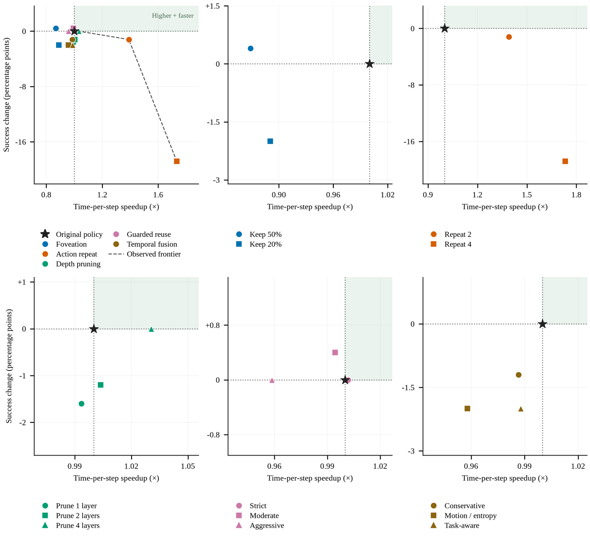
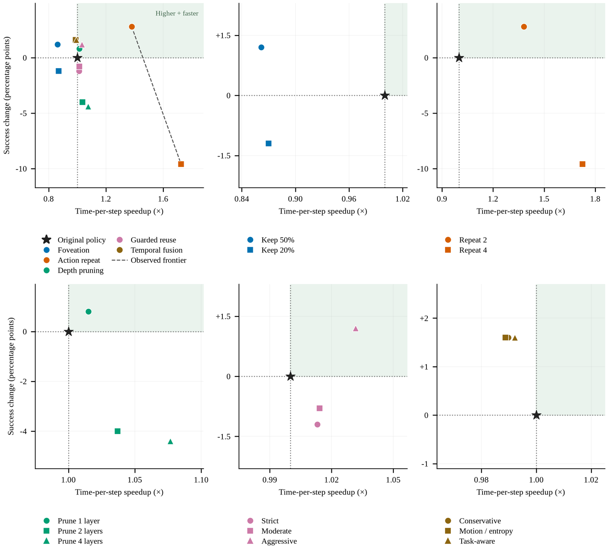
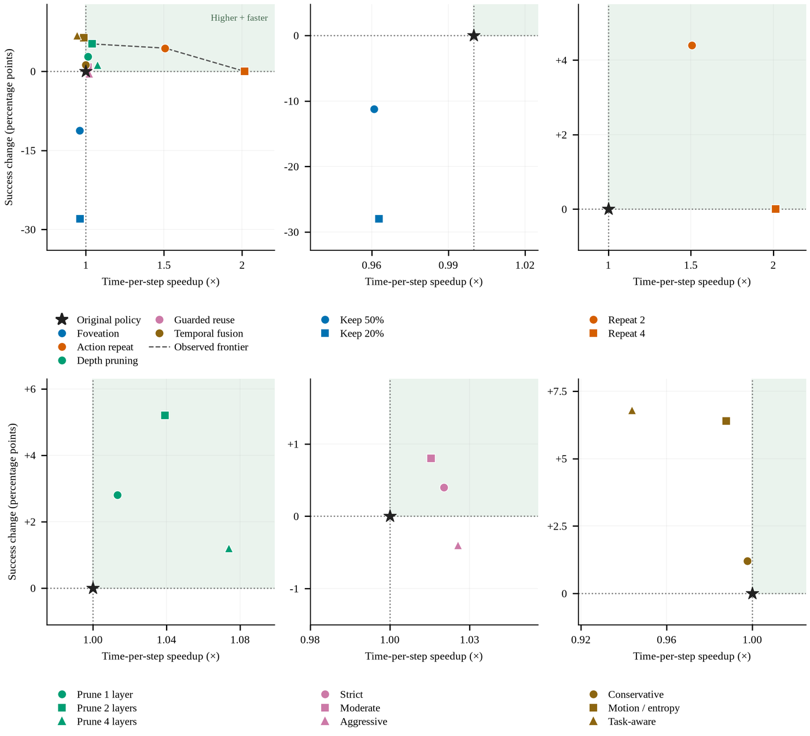
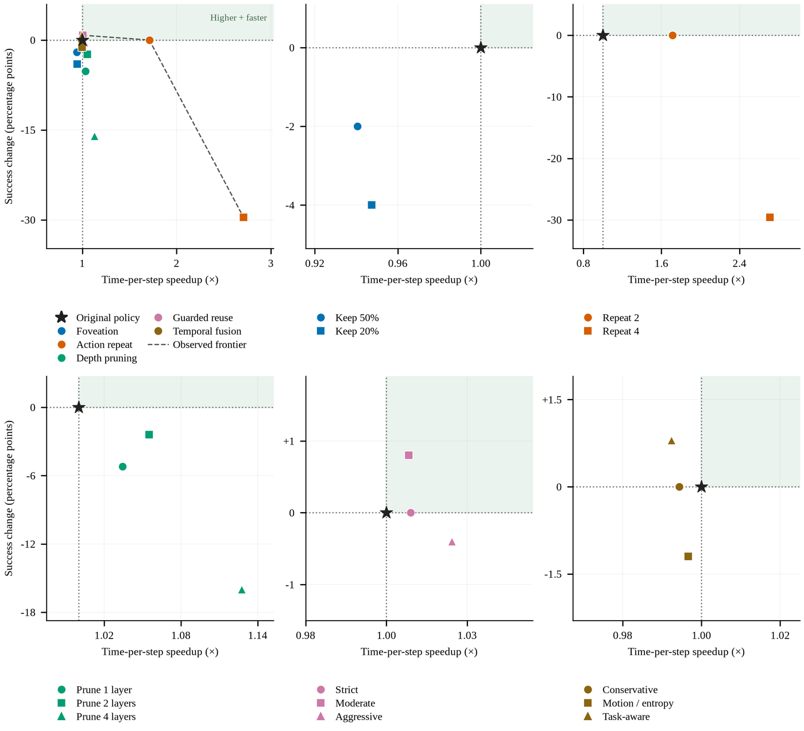
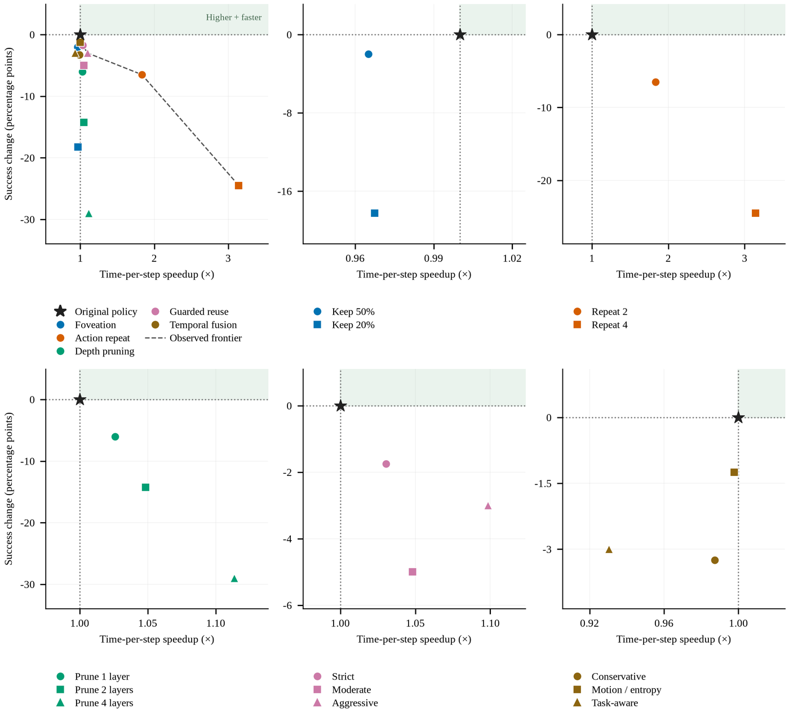
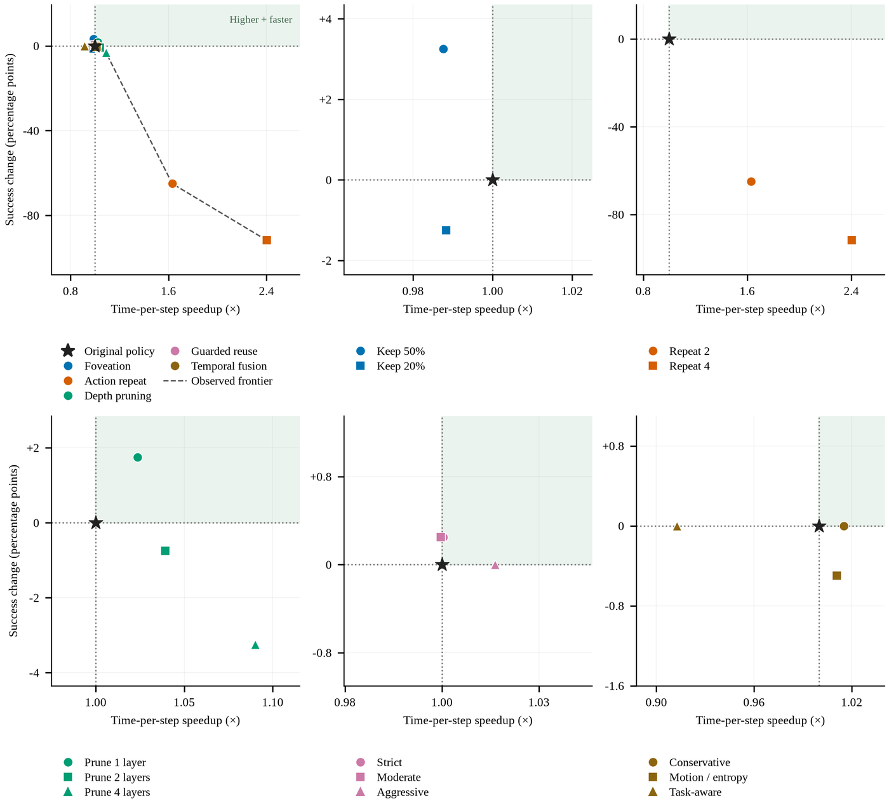
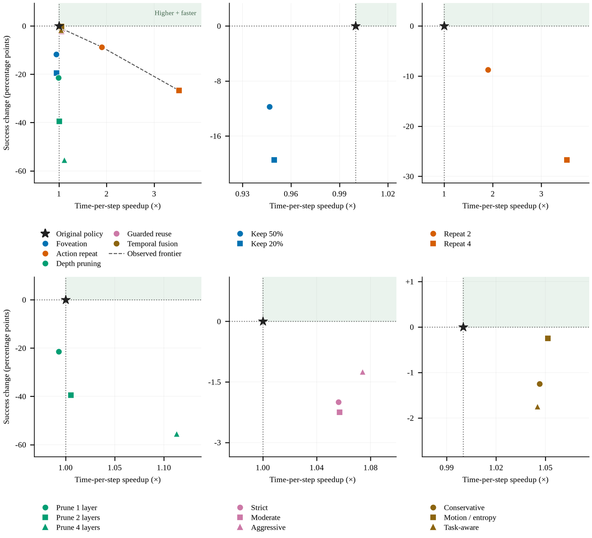


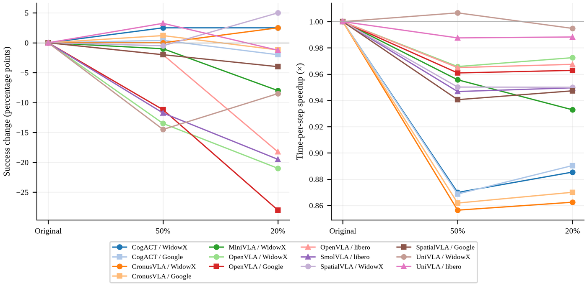
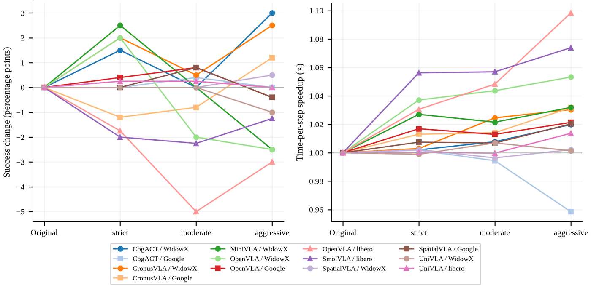
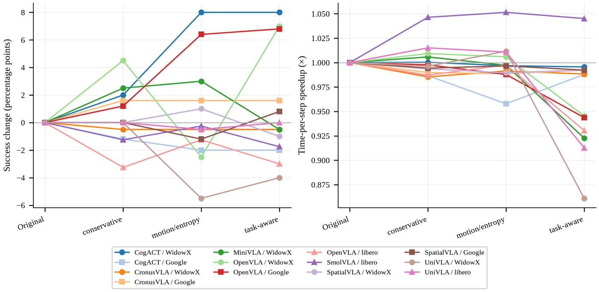
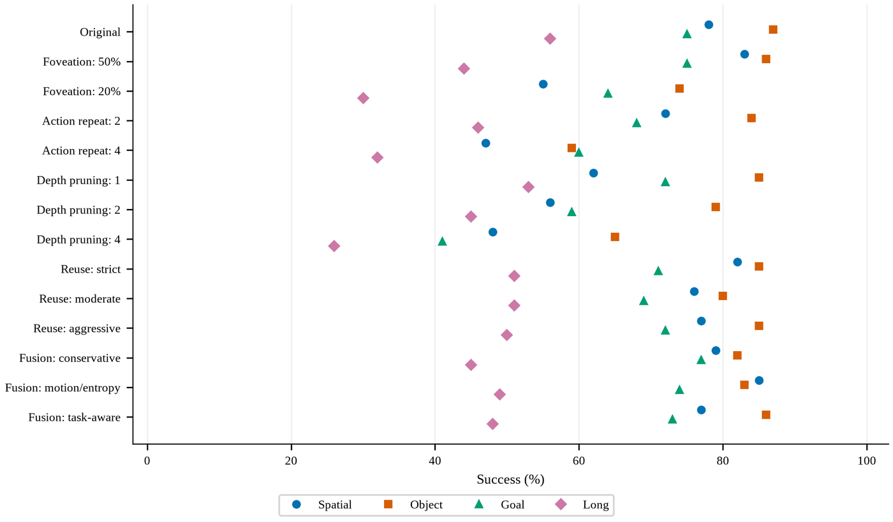
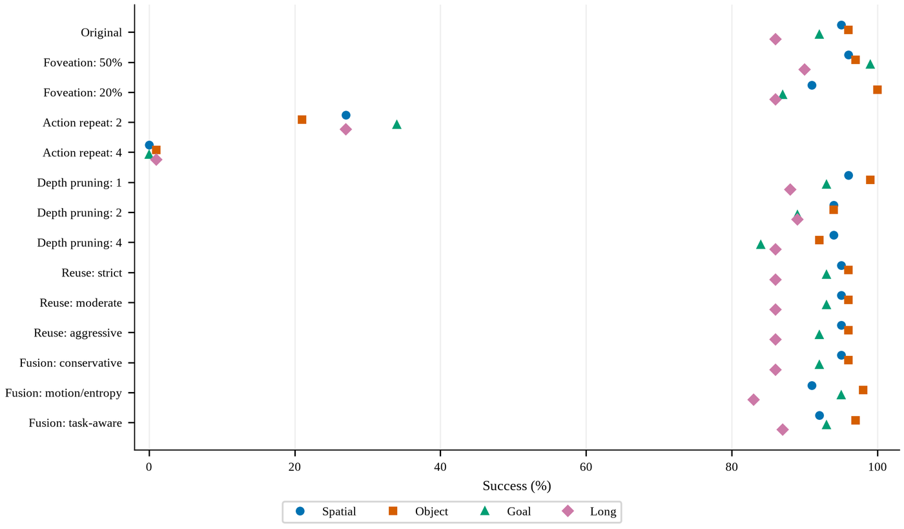
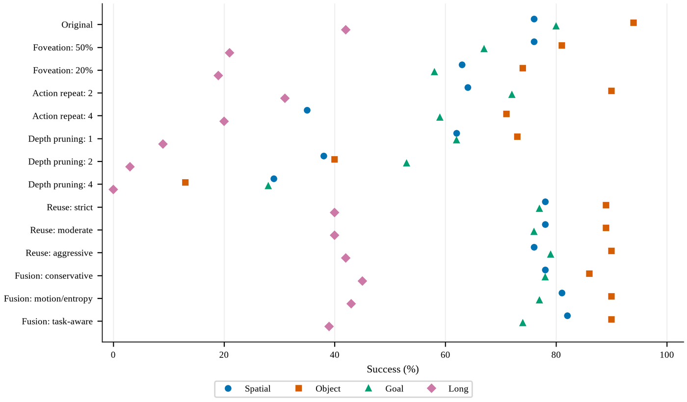
2.4 Statistics and reproducibility checks
Per-cell p-values. Every setting's exact two-sided McNemar p-value, computed on the episodes whose outcome flipped between the original and the trick, is in the tables of 2.1. Over the 110 table cells (the best setting per trick), 22 lower success at p < 0.05 and 4 raise it: CogACT WidowX depth pruning 2 layers (+9.5, p = 0.009), OpenVLA Fractal task-aware fusion (+6.8, p = 0.012), CogACT WidowX motion-entropy fusion (+8.0, p = 0.020) and UniVLA LIBERO Goal foveation 50% (+7.0, p = 0.039). Over all 286 settings, 77 lower success and 6 raise it at p < 0.05.
Multiplicity. The paper reads the p-values as descriptive because each table cell is the best of two or three settings. A Benjamini-Hochberg correction at q = 0.05 over the 110 table cells keeps 16 of the 22 drops (cut-off p = 0.0061) and none of the 4 gains. The sum of the exact test sizes at the observed flip counts gives 3.1 chance passes over the 110 cells and 8.0 over the 286 settings, 4.0 per direction, so the 6 gains over all settings are about what chance produces. Guarded reuse changes success significantly in none of its 66 settings.
The 22 significant table drops and whether they pass the correction
| Backbone | Environment | Setting | Change | p | BH q = 0.05 |
|---|---|---|---|---|---|
| CogACT | WidowX | action repeat 2 | -38.0 | < 0.001 | pass |
| CronusVLA | WidowX | action repeat 2 | -30.5 | < 0.001 | pass |
| MiniVLA | WidowX | depth pruning 1 | -17.5 | < 0.001 | pass |
| UniVLA | WidowX | action repeat 2 | -75.0 | < 0.001 | pass |
| UniVLA | LIBERO Long | action repeat 2 | -59.0 | < 0.001 | pass |
| UniVLA | LIBERO Goal | action repeat 2 | -58.0 | < 0.001 | pass |
| UniVLA | LIBERO Object | action repeat 2 | -75.0 | < 0.001 | pass |
| UniVLA | LIBERO Spatial | action repeat 2 | -68.0 | < 0.001 | pass |
| SmolVLA | LIBERO Long | depth pruning 1 | -33.0 | < 0.001 | pass |
| SmolVLA | LIBERO Object | depth pruning 1 | -21.0 | < 0.001 | pass |
| SmolVLA | LIBERO Long | foveation 50% | -21.0 | < 0.001 | pass |
| OpenVLA | WidowX | action repeat 2 | -15.5 | < 0.001 | pass |
| OpenVLA | Fractal | foveation 50% | -11.2 | 0.001 | pass |
| SmolVLA | LIBERO Goal | depth pruning 1 | -18.0 | 0.001 | pass |
| SmolVLA | LIBERO Object | foveation 50% | -13.0 | 0.002 | pass |
| OpenVLA | WidowX | foveation 50% | -13.5 | 0.006 | pass |
| UniVLA | WidowX | foveation 20% | -8.5 | 0.010 | fail |
| OpenVLA | LIBERO Spatial | depth pruning 1 | -16.0 | 0.011 | fail |
| SmolVLA | LIBERO Goal | foveation 50% | -13.0 | 0.015 | fail |
| SpatialVLA | WidowX | depth pruning 1 | -6.5 | 0.024 | fail |
| SmolVLA | LIBERO Spatial | depth pruning 1 | -14.0 | 0.034 | fail |
| OpenVLA | LIBERO Long | foveation 50% | -12.0 | 0.036 | fail |
Run-to-run noise. On a guarded-reuse episode where the gate never fired, the original policy was called at every step, so the outcome should match the original run of the same seed. It does on SpatialVLA, UniVLA, OpenVLA Fractal and OpenVLA LIBERO (0.0 to 0.7 percent of such episodes differ). It does not on four WidowX pairs: the outcome differs on 16.5 percent of zero-fire episodes for CogACT, 13.4 for OpenVLA, 9.3 for CronusVLA and 9.1 for MiniVLA, and on 1.8 to 4.6 percent on CogACT and CronusVLA Fractal. On those pairs a cell can move by a few points with no trick at all, which is the scale of several small gains in Table I (CogACT WidowX foveation +2.5 at p = 0.60, guarded reuse +3.0 at p = 0.36, CronusVLA WidowX foveation +2.5 at p = 0.44), and only the paired test is read. The SmolVLA reuse cells, run under the re-implemented evaluator, differ from the original on 10.5 to 30.5 percent of zero-fire episodes.
| Backbone | WidowX | Fractal | LIBERO (pooled) |
|---|---|---|---|
| CogACT | 16.5 % (522 zero-fire episodes) | 1.8 % (716) | |
| OpenVLA | 13.4 % (409) | 0.0 % (612) | 0.0 % (144) |
| CronusVLA | 9.3 % (538) | 4.6 % (609) | |
| MiniVLA | 9.1 % (438) | ||
| SpatialVLA | 0.5 % (572) | 0.0 % (604) | |
| UniVLA | 0.3 % (598) | 0.2 % (1,186) | |
| SmolVLA | 20.3 % (760) |
Cells that are the original policy under another name. A zero change can mean the trick did not engage. The ten UniVLA guarded-reuse cells on Goal, Object, Spatial and WidowX strict fired no gate and differ from their original row by at most 1.6 percent in latency, which is the latency floor of a repeated run. Conservative-adaptive fusion reused no patch on SpatialVLA or UniVLA, so the Table I UniVLA WidowX fusion cell (87.50, +0.00) and the Table II UniVLA Spatial fusion cell (95.00, +0.00) are the original run. CogACT's task-aware fusion is its motion-entropy run, and CronusVLA's three fusion settings are one run.
2.5 Qualitative rollouts: every configuration on one episode
Each clip shows all 14 configurations of one backbone on one episode with the same initial state, playing together. The border and the badge mark the outcome of that run. Episodes were chosen so that the pattern of outcomes matches the direction of the paper's per-setting results; they are illustrations, not additional evidence. The WidowX rollout videos come from a re-run of the CogACT experiment, so for three of the 140 tiles the badge differs from the episode record used in the tables (eggplant rollout 3 depth pruning 2; stack cube rollout 5 foveation 20% and 50%); the clips show the rendered run.
3. Additional discussions
These points extend Sections IV-B, IV-C and V of the paper. Every number is recomputed from the per-episode records of the submission.
3.1 Depth pruning flips sign with the layer that Block Influence picks
The paper reports that the same depth-pruning budget helps CogACT and hurts MiniVLA and SpatialVLA on the same WidowX episodes. The removed indices (Section 1.3) show that the criterion picked different depths on each backbone: index 17 or 23 of 32 on CogACT and OpenVLA, where success held or rose, index 13 of 24 on MiniVLA and index 8 of 26 on SpatialVLA, where it fell (MiniVLA -17.5, -36.0, -36.0 at one, two and four layers; SpatialVLA WidowX -6.5, -17.0, -31.0). The same effect appears inside one backbone: OpenVLA on LIBERO loses 16 points on the one suite whose calibration frame picked index 8 (Spatial) and 2 to 3 points on the three suites that picked 17 or 23, and at four layers Spatial removes 8, 20, 23, 25 and drops 30 points. This is descriptive, not causal, but it means the removed layer indices have to be reported next to the budget. The per-call saving is close to the removed blocks' share of the decoder on the Llama-style stacks (four layers cut per-call time by 12.0 percent on OpenVLA WidowX, 12.8 on SpatialVLA, 12.6 on MiniVLA, 10.5 on UniVLA) and about half of that on CogACT (5.5 percent), whose diffusion action head is not pruned.
3.2 Action repeat on a chunking policy is a different operation
Six backbones emit one action per call, so k = 2 means two environment steps between decisions. UniVLA emits a chunk of 5 actions on WidowX and 10 on LIBERO, so the same setting means 10 and 20 open-loop steps at k = 2 and 20 and 40 at k = 4 (Section 1.2). The collapse of UniVLA under action repeat (-75.0 on WidowX at k = 2; -59.0, -58.0, -75.0, -68.0 on the four LIBERO suites; 0 to 3 percent success at k = 4) is the arithmetic of that horizon, while the single-action backbones lose 4 to 38 points on WidowX and 0 to 4 on Fractal at k = 2. UniVLA's mean policy calls even rise at k = 2 on WidowX (7.2 against 6.4 for the original) because failed episodes run to the cap. A column headed "action repeat" compares different operations unless the chunk length is printed next to it.
3.3 What a repeated call saves: a one-line model of per-step latency
Action repeat halves or quarters the number of policy calls, but the simulator step, rendering and bookkeeping are paid on every environment step and the per-call time of the model does not change. The per-step time ratio is therefore 1 - s + s / k, where s is the model's share of a step in the original run. That share is 0.59 to 0.76 on CogACT, MiniVLA and OpenVLA SimplerEnv, 0.74 to 0.79 on UniVLA, 0.84 to 0.91 on SpatialVLA and OpenVLA LIBERO and 0.93 to 0.95 on SmolVLA, and the model predicts the observed ratio within 0.02 on all 20 pairs with per-call timing at both k = 2 and k = 4 (for example CogACT WidowX 0.65 predicted and 0.65 observed, SpatialVLA WidowX 0.55 and 0.55, OpenVLA LIBERO 0.54 to 0.56 and 0.54 to 0.56). Per-call latency under repeat stays within 1.5 percent of the original on 14 of the 20 pairs and within 6.1 percent on all. A practitioner can predict the gain of action repeat from the original run alone.
3.4 Guarded reuse is safe mostly because its gates rarely open
The paper calls guarded reuse the most reliable trick. The fire counts (Section 1.4) show why: on most pairs the gate opens on well under 5 percent of steps, on ten UniVLA cells it opens on zero steps, and on the legacy-stack cells the per-step saving tracks the gate share to within about two points (OpenVLA LIBERO Goal aggressive -10.4 percent at an 11.2 percent share, OpenVLA WidowX -5.1 at 6.3, MiniVLA -3.1 at 4.0, CogACT WidowX -1.9 at 2.7; CogACT Fractal aggressive is the exception at +4.3 percent for a 0.6 percent share). Where the gate does open often, on OpenVLA LIBERO, the trick saves 8 to 10 percent of the time and costs 0 to 6 points that the paired test does not separate from zero. A green guarded-reuse cell should be read as "did not act" before it is read as "acted safely", and any gated trick should be reported with its fire count. The presets were the same on every backbone; thresholds tuned per policy were not tried.
3.5 Small deltas on WidowX are inside run-to-run noise
Four WidowX pairs do not reproduce their own rollouts under a fixed seed (Section 2.4): 9 to 17 percent of episodes on which the original policy was called at every step end differently from the original run. Cells on CogACT, OpenVLA, CronusVLA and MiniVLA on WidowX can therefore move by a few points with no trick applied, which covers the +2.0 to +3.0 gains of foveation, depth pruning and guarded reuse on those pairs in Table I (all at p > 0.3). The three CogACT WidowX guarded-reuse presets alone span +1.5, 0.0 and +3.0 with the gate open on 0.3 to 2.7 percent of steps. On the other twelve pairs a repeated run reproduces the original on all but at most one episode in a hundred.
3.6 Only the drops survive a multiplicity correction
The paper reads its p-values as descriptive because each table cell is selected from two or three settings. Applying the correction the paper leaves out makes the asymmetry explicit (Section 2.4): 16 of the 22 significant drops pass a Benjamini-Hochberg correction over the 110 cells and none of the 4 gains does, and over all 286 settings the 6 gains at p < 0.05 are about the 4 per direction that chance produces. Three of the four table gains and the two extra passing settings sit on CogACT WidowX and OpenVLA Fractal, the two pairs on which every depth and fusion setting is positive, so they may be a property of those pairs rather than of the tricks. The honest reading of a green success cell is "not worse"; the honest reading of a red one is usually "worse".
3.7 The pooled numbers hide a per-task split
Success in Tables I and II is pooled over four, five or ten tasks. The per-task tables of Section 2.2 show that most significant drops are carried by one or two tasks: OpenVLA WidowX foveation 50% (-13.5) is eggplant in basket falling from 37 to 12 of 50 while carrot on plate and spoon on towel are unchanged or up; OpenVLA Fractal foveation 20% (-28.0) collapses move near (31 to 3), pick coke can (29 to 1) and open drawer (9 to 0) while close drawer holds (20 to 15); MiniVLA depth pruning 1 layer (-17.5) is stack cube falling from 36 to 8 (28 of the 35 lost episodes); SpatialVLA WidowX depth pruning 4 layers (-31.0) is eggplant falling from 50 to 8 with carrot unchanged. Several unchanged cells are a gain on one task cancelled by a loss on another (UniVLA Long foveation 20%, 0.0 pooled: task 8 falls 6 to 2 and task 2 loses two, task 9 rises 7 to 10). The failing task is usually the one with the finest contact or the most off-centre target, and a pooled zero can be two real effects.
3.8 Foveation costs time instead of saving it
Foveation leaves the image size and the visual-token count unchanged, so the model does the same work. The per-call latency of every foveated run is within a few percent of the original, while the per-step latency rises by 2 to 17 percent on six backbones (CronusVLA +15 to +17, CogACT +12 to +15, MiniVLA +5 to +7, SpatialVLA +5 to +6, SmolVLA +3 to +7, OpenVLA +2 to +4; in milliseconds per step, +18 to +28 on SpatialVLA, CronusVLA and CogACT). The difference is the image path: two Gaussian blurs and a per-pixel blend on the CPU for every frame (Section 1.1). UniVLA pays under 4 percent because it blurs one frame per chunk of 5 or 10 steps. Any benefit of foveation is a robustness effect, not an efficiency one.
3.9 More blur is not uniformly worse
The tables show only the better keep ratio. Across the two settings the ordering is environment dependent: on WidowX the harsher keep 20% ties CogACT (52.5 vs 52.5) and leads on CronusVLA (36.5 vs 34.0), SpatialVLA (50.0 vs 44.5) and UniVLA (79.0 vs 73.0), while keep 50% leads on MiniVLA and OpenVLA; on Fractal and LIBERO keep 50% is at least as good on 15 of 16 pairs (the exception is UniVLA Object, 100 vs 97). The keep ratio is not a monotone knob whose safe direction is known in advance.
3.10 Task-aware fusion buys its attention signal with 7 to 17 percent more time per call
The task-aware setting materialises the text-to-vision attention of the preceding call. Every backbone that collects it pays on every call with no change in the token count: OpenVLA +7.1 to +9.0 percent per call on its six pairs, MiniVLA +12.9, UniVLA LIBERO +12.0 to +16.6; motion-entropy and conservative-adaptive on the same pairs are within -1.5 to +3.0 percent (CogACT Fractal motion-entropy +4.8 is the one exception). SpatialVLA collects relevance at under 1 percent per call, and CogACT does not collect it at all (Section 1.5). Table I and II pick task-aware as the best fusion setting on OpenVLA WidowX, OpenVLA Fractal and OpenVLA Object, so a reader who copies those cells should know the price. On MiniVLA and UniVLA the cost also includes a switch of the attention backend to eager; only on OpenVLA are the two separated, because its LIBERO original row already runs eager and pays the same 7 to 9 percent.
3.11 Average steps follows success
Both simulators run a failed episode to its step cap. All 21,568 failed episodes across the 22 pairs end exactly at the cap, so the Avg. Steps column is a success-weighted mix of the successful episodes' length and the cap (UniVLA WidowX action repeat k = 2: success 87.5 to 12.5 and steps 30.2 to 71.9; MiniVLA depth pruning 2 layers: success 36.0 to 0.0 and steps 63.8 to 75.0, the mean of the four caps). It is not an independent efficiency measure.
3.12 What to do before applying any of these tricks to a new backbone
Run the original policy on the exact seeds first, because on some backbones a rerun alone moves a cell by several points. Report the engagement counter of every gated or masked trick (fire count, keyframe share, reused tokens), since a zero change can be an inert trick. Print the chunk length and the resulting open-loop horizon next to any action-repeat or reuse setting. Measure per-step wall-clock and per-call time separately, because foveation and task-aware fusion add time outside or inside the call and action repeat saves only the model's share of a step. Record the removed layer indices with the budget, and hold the software stack and GPU class fixed within a comparison. On a Llama-style 32-layer decoder the data support one or two removed layers at about 3 percent per-call saving per layer (half that on CogACT) with success kept on CogACT, OpenVLA SimplerEnv and UniVLA LIBERO, a 5.5-point loss on UniVLA WidowX and larger losses on MiniVLA, SpatialVLA and SmolVLA. For a chunking policy action repeat at any k collapsed. For guarded reuse the strict preset opened on under 1 percent of steps on 15 of 22 pairs.
3.13 Limitations and implementation caveats
- Each cell is one run, so the paired test speaks only to the tested initial states. Several seeds per cell are future work.
- CogACT, CronusVLA, MiniVLA and OpenVLA do not reproduce their WidowX rollouts under a fixed seed (Section 2.4).
- LIBERO cells, with 100 episodes, have less power than the SimplerEnv cells with 200 or 250.
- Guarded reuse ran fixed presets rather than thresholds tuned per policy, and its gates rarely opened.
- CogACT tested two fusion settings, not three, because it exposes no text-to-vision attention where fusion runs. CronusVLA's three fusion settings are one run whose parameters were not recorded. Conservative-adaptive fusion never engaged on SpatialVLA and UniVLA.
- SmolVLA's depth-pruning layers are fixed indices, not chosen by Block Influence, and its guarded reuse, temporal fusion and part of its depth cells ran under a re-implemented evaluator on several GPU classes, so their latency is not comparable with the original row (Section 1.6).
- Three runs (CronusVLA WidowX moderate and aggressive reuse, UniVLA WidowX task-aware fusion) were repeated on an RTX 5090 after the first attempt failed; their latency is not compared.
- Depth-pruning calibration for six backbones used the first observation of the evaluation run rather than a disjoint calibration set; the ranking was frozen for the run.
- Latency is read only within one backbone, environment, software stack and GPU class; peak memory was not measured; all runs are in simulation.
- The shared reuse mask between temporal fusion and the generation cache (Section III-G) was not measured; fusion is not credited with any acceleration.